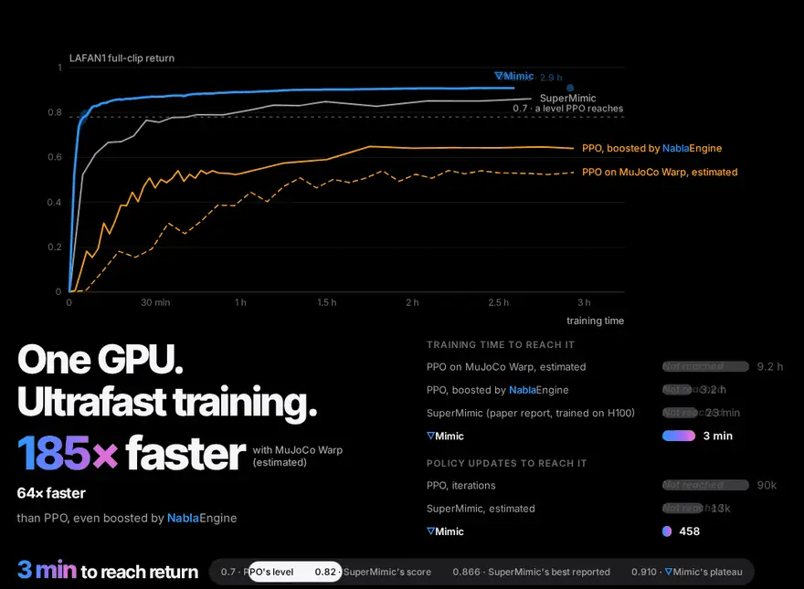
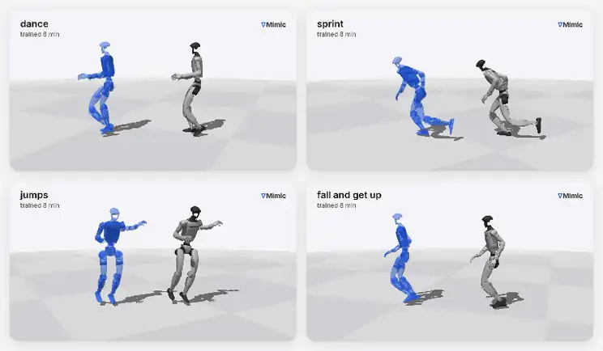
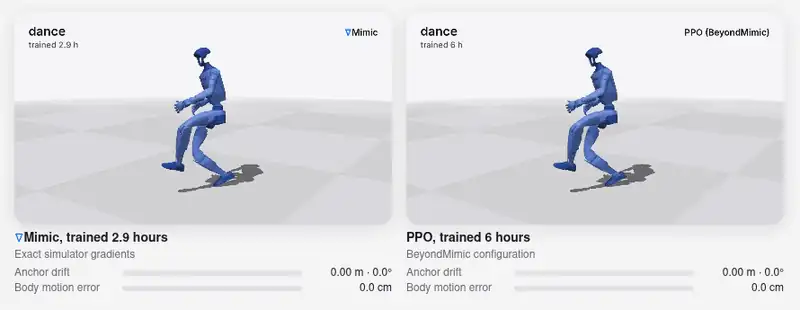

arXiv 2610.41654 · cs.RO · v1 2026 年 10 月 30 日 · 预印本 · 中文精读
∇Mimic: Ultra-Efficient Humanoid Control with Differentiable Simulation
作者 Weyl Lu、Yubei Chen（加州大学戴维斯分校）。∇Mimic 读作 NablaMimic，配套引擎叫 NablaEngine。
关于这份精读。arXiv 上这篇登记的是默认的非独占分发许可（arXiv.org perpetual non-exclusive license），没有授权翻译或转载。所以这里不逐字翻译，不放 PDF 里的任何原图，本地也没有存裁切图。正文第 1 到 9 节和附录 A 到 H 按原文顺序用自己的话覆盖，公式按原文编号，主要结果表照录数字。每张原图用文字说明画了什么，“看原图”打开 arXiv 网页版的对应位置。标“按原图读数重画”的图 1(a)、图 1(b)、图 2(b) 不是原图：图 1(a)、图 2(b) 是我从 PDF 第 2、6 页的矢量路径读出点后画的，图 1(b) 用的是正文和表 3、表 5、表 6 写明的数字。
读的是 arXiv v1（2026-10-30）。论文脚注里的项目页 oamics.github.io/NablaMimic/ 我在 2026-11-23 访问时返回 404；仓库 README 给的项目页是 sailab.ai/nablamimic/（能打开，我只链接，没有抓取内容）。README 还链接了作者站点上一份更新过的 PDF（29 页，2026-11-03 生成），摘要的主要数字已经改了：到 0.82 是 8 分钟，平台约 0.91，并加了一个开源世界模型跟踪器 InstantTrack 的对照。这份精读只按 arXiv v1 写，新版我只核对了摘要和几处数字，没有逐节对照（读者注 13）。
官方代码 OamIcs/NablaMimic 提交 bfbb2a6（2026-11-03，版本 0.2.0），许可 Apache-2.0，带 NOTICE 和 THIRD_PARTY_NOTICES.md。我只读没跑。页面里引用文件名、行号和配置键为主，不大段复制代码。仓库 assets/ 里的三张 GIF 属于仓库内容（Apache-2.0），我只把格式从 GIF 转成了 WebP，没有缩放或裁切，图注里写明出处。物理引擎 NablaEngine 是另一个仓库（Apache-2.0，NablaMimic 固定在它的提交 c61a6fe，即 v0.1.0），我没有读它的源码，引擎内部只按论文附录 B 写。数据集 LAFAN1（CC BY-NC-ND 4.0）不在仓库里，也没有下载。
标成“读者注”的框是我核算或对照的结果，不属于论文内容，页尾有汇总。
人形机器人的动作跟踪：给一段参考动作，学一个策略，让仿真里的机器人把它做出来。主流做法是 PPO 这类零阶方法：把仿真器当黑箱，只拿每一步的标量奖励，靠海量样本估计梯度。一阶方法穿过动力学求导，每一步都直接给出“动作往哪改、改多少”，但在接触多的全身控制上一直不好用：梯度会爆炸。
SuperMimic 学了一个可微的世界模型，再穿过它求导，在人形跟踪上比 PPO 快得多。这篇换了个读法：快的原因是用了导数，世界模型只是为了让导数“有界、便宜”付出的代价。仿真器本身的导数是精确的，但有两个问题：
论文分两部分解决：
结果。LAFAN1 全部 40 段、一个策略、一张 RTX PRO 6000：0.34 小时（约 20 分钟）第一次到 SuperMimic 报告的 0.82，1.8 小时到 0.874，1.5 小时后三个种子没有一段摔倒。同一引擎上的 PPO 6 小时只到 0.695；SHAC 照原样跑几分钟就因梯度爆炸被自己的守卫停掉。没有真机实验。
读完我认为最值得记住的四点：
configs/ours.args 换了三处（不再截掉窗口内回合结束后的步、评测打分用 Polyak 平均的策略、预热 100 次），README 的“8 分钟、约 0.91”对应作者站点上的新版 PDF；论文 v1 的数字要用 configs/base/ours_v1.args 加 --residual-action（读者注 19）。这一篇正好接在本站几条线的交叉点上：DiffMimic 和 SHAC 是“穿过可微仿真器做 BPTT”的前辈；SuperMimic 和 SuperDyno 是“学一个可微世界模型再做 BPTT”；BeyondMimic、SONIC 是 PPO 跟踪；holosoma 15 分钟是离策略的 FastSAC；DaXBench 是可变形物体上的可微强化学习基准。下表是我对照各页（各页又对照了各自原文）整理的，不是任何一篇作者的说法。
| 项目 | ∇Mimic（本文） | DiffMimic | SHAC | SuperMimic | SuperDyno | DaXBench 里的 APG / SHAC | BeyondMimic / SONIC | holosoma（FastSAC） |
|---|---|---|---|---|---|---|---|---|
| 策略梯度从哪来 | 可微仿真器 NablaEngine 的解析伴随（精确梯度） | 可微仿真器 Brax（JAX 自动微分） | 可微仿真器 dFlex | 学到的世界模型（替代梯度） | 学到的神经动力学（只预测速度） | 可微仿真器 DaX（JAX） | PPO：似然比，零阶 | 评论家 Q 的重参数化梯度，无模型 |
| 仿真器本身要不要可微 | 要，而且为 G1 手写了伴随 | 要 | 要 | 不要，仿真器只产数据 | 不要 | 要 | 不要 | 不要 |
| 反传多长 | H = 64 步（1.28 s） | 代码 59 步，论文 4 s 全程；示范回放处断开 | h = 32 | H = 32（想象步） | Tπ = 32 | APG 默认 10 步；发布的 SHAC 是整个回合 | 不反传 | 不反传 |
| 窗口之外 | TD(λ) 评论家自举 | 没有评论家 | 评论家 V | 评论家 V | 没有评论家 | APG 无；SHAC 有但最后一步被清零 | 价值函数 + GAE | 分布式评论家 |
| 怎样防梯度爆炸 | 每步逐样本裁到中位数 × 3；引擎冻结两类无界几何导数；动作目标按弧度定步长 | 全局范数裁剪（论文 0.3，代码 0.4）；示范回放 | 短窗口；全局范数 1.0（代码） | 模型本身光滑有界；全局 1.0 + 逐元素 0.1 | 模型光滑；没有评论家 | 每步 NaN 清零 + 归一化；全局 0.3 | 不涉及 | 不涉及 |
| 一份数据用几次 | 每个窗口回归 8 步（PODS 式） | 一次 | 一次 | 世界模型摊销；想象窗口用一次 | 每 epoch 4 次策略更新 | 一次 | 5 轮 × 4 小批 | 回放缓存，平均约 16 次 |
| 任务与规模 | LAFAN1 40 段，一个策略，4096 个窗口/次 | 每个动作单独训，200–300 环境 | 6 个连续控制任务 | LAFAN1；BONES-SEED 12.9 万段 | AMASS 11313 段，1024 环境 | 9 个可变形物体任务 | BeyondMimic 每段单独训；SONIC 700 h 动捕 | 行走为主；跟踪做单段 |
| 算力（各自报告） | 1 × RTX PRO 6000，0.34 h 到 0.82 | 1 × V100 | 1 × GPU | 1 × H100，1.2 h 内到 0.82；3 h 超过 SONIC | 1 × A6000 约 3 天 | — | SONIC 128 GPU × 7 天 | 1 × 4090 × 15 min（行走） |
| 真机 | 没有（§8） | 没有 | 没有 | G1 | 没有 | 推绳（CEM-MPC） | G1 | G1、T1 |
和 SuperMimic：仿真器可微时还要不要世界模型？这是本文明确在答的问题，下面按论文原话的意思转述，不替作者下更大的结论。
和 SHAC。∇Mimic 的骨架就是 SHAC 的“短窗口 + 评论家”。区别有三：梯度处理（SHAC 只有一个全局范数裁剪和一个范数超过 106 就停机的守卫，∇Mimic 改成逐样本、按中位数）；用法（SHAC 每个窗口走一步 Adam，∇Mimic 回归 8 步到动作目标）；数据路径（SHAC 窗口接着上一个窗口的末态，∇Mimic 从回放缓存取起点，这一点沿用 SuperMimic）。§4.1 把 SHAC 失败的原因定位到单个样本：中位数和 99.9 分位都平稳，只有最大值突然到中位数的 109 倍以上。本站 SHAC 页记过它代码里的梯度范数裁剪是 1.0；106 守卫我没有在本站 SHAC 页里核实到。
和 DiffMimic。同为“穿过可微仿真器做动作模仿”，但 DiffMimic 每个动作单独训、没有评论家，靠示范回放在跑偏处断开梯度；∇Mimic 一个策略跟 40 段、有评论家，靠逐样本裁剪处理接触处的极端梯度。∇Mimic 在 §2 只用一句提到 DiffMimic：“在 Brax 里跟踪单段动作，没有评论家”。DiffMimic 页的读者注 3 说示范回放本质上也是按误差决定位置的截断，可以和本文 §5.4 的窗口长度权衡对照着看。
和 SuperDyno、DaXBench。SuperDyno（∇Mimic 参考文献 [37]，引用时注明 SuperMimic 管它叫 SuperDyno）是世界模型路线在人形跟踪上的前身，∇Mimic 在 §2 把它列在“穿过学到的模型求梯度”一类。DaXBench 不在本文的参考文献里；放在这里是因为它的结论正好是本文 §4.2 说的反面例子：可变形物体上很多任务用宏动作、短视野、稀疏信号，可微强化学习多数不如 PPO。DaXBench 页读者注 15 记录的“每步 NaN 清零 + 归一化”，和本文的“逐样本裁剪 + 冻结无界导数”是同一类工程补救，粒度不同。这段对比是我的看法。
和 BeyondMimic、SONIC、holosoma。本文的奖励是 BeyondMimic 的跟踪奖励（权重取 SuperMimic 表 A.2），PPO 基线用 BeyondMimic 的配置，两段 PPO 都跑在 NablaEngine 的前向上（同一引擎、同一 GPU）。SONIC 只在相关工作里作为“PPO 放大到 2.1 万 GPU 小时”的例子出现，本文没有和它比。holosoma 15 分钟（FastSAC）不在本文参考文献里；它和本文都说“比 PPO 快”，但 holosoma 的倍数是同一任务、同一硬件下的时间比（行走约 2.7 倍，Dance 跟踪约 2 倍，见该页），本文对 PPO 是“6 小时没到 0.82”，对 SuperMimic 是跨 GPU 的时间比，口径不同，不能并排比大小。
动作跟踪已经是人形学习的核心任务：只要人的动作能重定向到机器人上，跟踪策略就能把它做出来。这条线从角色动画里的 DeepMimic 一路到真机人形。两件事让它从“一个技能”变成“地基”：更大、更好的动作数据集（AMASS、LAFAN1、BONES-SEED）和它们的机器人重定向版本；以及一个通用跟踪器可以当更大系统的底层策略，它的编码器-解码器结构给遥操作、动作生成和下游任务提供了接口。
这些跟踪器几乎都用零阶策略梯度训练，主要是 PPO：只要黑箱仿真器给的奖励，代价是巨大的样本量。GPU 大规模并行让样本便宜了，但一个全身跟踪策略仍然要几小时到几天，这限制了能扩多大。
一阶方法穿过动力学对回报求导，每一步都贡献一个更新方向而不只是一个标量。但在接触多的全身控制上，穿过刚性接触的梯度会爆炸。SHAC 也不例外：在 G1 全身跟踪上，每一次 SHAC 都在几分钟内撞上梯度爆炸停下（§4.1）。
穿过学到的动力学模型求导也有很长的历史（随机值梯度、MAAC、Dreamer、角色动画里的跟踪控制器）。SuperMimic 把它带到了大规模人形全身跟踪：穿过学到的世界模型而不是仿真器求导，比 PPO 快得多。作者对此的读法上面已经写了：增益来自导数本身，世界模型是让导数有界且便宜的代价。那么这个代价买到了什么、是否必须付？世界模型给替代梯度（光滑、有界、便宜，但是另一个系统的导数）；仿真器给精确梯度（就是被仿真系统的导数，但少数样本无界，且伴随要重算接触求解，所以贵）。
本文同时去掉这两个障碍：∇Mimic 处理样本，按样本限住少数极端梯度，其余的变成步长按物理单位固定的动作目标，让任何单个样本都主导不了一次更新（§5）；NablaEngine 处理成本，伴随写成一个大内核，精确梯度比多走一步前向还便宜（§6）。
结果：40 段 LAFAN1、一个策略、一张 GPU，20 分钟到 SuperMimic 的 0.82（SuperMimic 报告 1.2 小时），1.8 小时到 0.874，1.5 小时后没有任何种子在任何片段上摔倒（图 1）。同引擎的 PPO 6 小时内一直低于 0.82。引擎每秒墙钟仿真 18.8 小时的机器人运动。动作跟踪适合精确梯度，因为奖励稠密，几乎处处指向参考；稀疏奖励时，窗口长短要在“更依赖评论家”和“累积更多极端梯度”之间权衡（§4.2）。
贡献。(1) 对精确梯度和替代梯度的分析：接触事件附近的无界导数沿长窗口累积，能解释以往一阶方法在全身控制上的失败；世界模型便宜，能解释替代梯度的成功。(2) ∇Mimic：在几千个并行环境的规模上，对精确接触梯度稳定的一阶方法，每个组件都有消融。(3) NablaEngine：开源的 G1 可微仿真引擎，解析梯度和 float64 有限差分一致。(4) 不用世界模型、一张 GPU，在人形跟踪上达到世界模型方法的水平：LAFAN1 上 20 分钟到 0.82，而不是 1.2 小时。
两栏。(a) 横轴是单张 RTX PRO 6000 上的训练墙钟（线性，0 到 6 小时），纵轴是 LAFAN1 归一化回报。蓝色 ∇Mimic（3 个种子的均值 ± 标准差）开局几分钟就冲到 0.5 以上，20 分钟左右碰到虚线 0.82，之后在 0.87 附近走平；虚线旁标着“SuperMimic within 1.2 h”。灰紫色是同一引擎上的 PPO，6 小时还在 0.7 左右。(b) 横向条形图，对数横轴，每 20 ms 控制步、4096 个世界的耗时：前向一步 NablaEngine 1.21 ms，MuJoCo Warp 5.84 ms（4.8 倍），Isaac Lab（PhysX，用它自己的 G1 资产和任务默认值）27.5 ms（22.7 倍），MJX 255 ms（211 倍）；一步的梯度 NablaEngine 1.78 ms，MuJoCo Warp 加 PR #1535 20.5 ms（11.5 倍）。
图 1(a) · 按原图读数重画（PDF 第 2 页矢量路径；只画均值线，标准差带略去）
∇Mimic 70 个点、PPO 51 个点，读数误差约 ±0.003。蓝色竖虚线是均值第一次过 0.82 的位置（0.341 h）。黄色菱形不是数据点，只标出 SuperMimic 自己说的“1.2 小时以内”，硬件是 H100，不是同一张卡。
图 1(b) · 按原图数字重画（数字见正文和表 3、表 5、表 6，RTX PRO 6000）
论文里出现的“快多少倍”至少有六个，口径各不相同：
| 说法 | 算式 | 比的是什么 | 同一 GPU？ |
|---|---|---|---|
| “20 分钟而不是 1.2 小时”（摘要、§1、§7.2） | 1.2 / 0.34 = 3.5；按 20 分钟算 72/20 = 3.6 | 到 0.82 的训练墙钟 | 否：∇Mimic 是 RTX PRO 6000，SuperMimic 是它论文自报的 H100；而且 1.2 小时是“以内”，是上界 |
| 同为 H100 的参照（附录 H 表 11） | 1.2 / 0.41 = 2.9 | ∇Mimic 绝对动作版（单种子）在 H100 上 0.41 h 到 0.82 | 是（都 H100），但用的是绝对动作版，主结果的残差动作版没在 H100 上跑 |
| 11.5 倍（摘要、§6） | 20.5 / 1.78 = 11.5（表 6） | 一个控制步“前向 + 梯度”的引擎耗时 | 是，但只在 RTX PRO 6000 上是 11.5；H100 9.2、RTX 3090 8.2、V100 6.0 |
| 4.8 倍（§6） | 5.84 / 1.21 = 4.83 | 只算前向 | 是 |
| 4.4 / 4.7 倍（§7.3） | 1.63 / 0.37 = 4.4；2.03 / 0.43 = 4.7 | 同一算法换引擎：每次更新的耗时、到 4k 次更新的墙钟 | 是。这是训练层面真正的引擎收益，比 11.5 小，因为策略网络、评论家、回归、数据收集都不变 |
| “约 1/13 的更新次数”（§4） | 41,000 / 3,235 = 12.7 | 到 0.82 所需的策略更新次数 | 不涉及硬件；但 41k 是从 SuperMimic 的另一条曲线（BONES-SEED）推算的，换一种计数是 16k，比值约 5（读者注 4） |
所以：“同一 GPU、同一任务、同一评测”的对 SuperMimic 比较，论文里没有，因为 SuperMimic 没有公开实现（§7.1、§8 自己承认）。能严格比的是同引擎上的 PPO（6 小时到不了 0.82）和 SHAC（3 小时到不了），以及 §7.3 的同算法换引擎（4.4 倍）。样本数口径：∇Mimic 到 0.82 用了 8.81 × 108 次仿真转移（表 12），SuperMimic 没报这个数，无法对比。
附录 G 定义“到某分数的时间”是 3 种子均值曲线的第一次越线，评测点之间线性插值。按图 1(a) 蓝线的矢量读数：0.319 h 是 0.770，0.341 h 是 0.820（越线），0.367 h 回到 0.804，0.445 到 0.452 h 低到 0.793，0.479 h 0.811，0.505 h 0.827，此后一直在 0.82 以上。所以“均值曲线稳定在 0.82 之上”大约从 0.5 小时开始，表 4 里 0.5 h 的 0.824 ± 0.008 也说明那时刚过线。逐种子看，表 11 写的是 0.36 ± 0.05 h。这不影响结论的量级，但“20 分钟”是最乐观的读法。
其余可核对的读数都对得上：∇Mimic 1.794 h 0.874（正文“1.8 h 到 0.874”）；PPO 6.0 h 0.695、5.75 h 0.751（表 11 的 6 h 回报和“最好 0.751”）；PPO 的点在第一小时每 0.033 h 一个，对应 configs/base/ppo.args 的“第一小时每 2 分钟存一次”。
零阶动作跟踪。DeepMimic 用 RL 建立了物理动作模仿；PHC 这类通用跟踪器一个策略模仿 AMASS 的几千段动作。真机上 H2O、OmniH2O、ASAP、GMT 等在 G1 上跟踪重定向后的人体动作。BeyondMimic 用一套紧凑的 PPO 配方和共享超参数跟踪敏捷的 LAFAN1 动作；SONIC 把 PPO 跟踪放大到 700 小时动捕和 2.1 万 GPU 小时（128 卡 7 天）。本文用 BeyondMimic 的 PPO 配置做零阶基线。
可微仿真器里的一阶策略学习。穿过可微仿真器做全视野 BPTT 会遇到混沌和梯度爆炸（Metz 等），穿过刚性接触的梯度可能有偏或方差大（Suh 等）。PODS 把策略回归到梯度改进过的动作上；SHAC 引入短窗口和 TD(λ) 评论家；后续工作自适应视野（AHAC）、加最大熵（SAPO）、把解析梯度和 PPO 结合（GI-PPO、RPO）、把渲染和梯度解耦（D.Va）。腿足机器人上能上真机的策略，用的是平滑过的足端接触、反向时用简化替代，或前向精确、反向用平滑的接触灵敏度。DiffMimic 在 Brax 里跟踪单段动作，没有评论家。BCG 在 Schwarke 等的平滑接触仿真器上结合 SHAC 和 ADD 模仿奖励，用 64 个环境训了 4 段 LAFAN1 的 G1 跟踪器。这些工作用 32 到 1024 个环境；本文每次更新用 4096 个 BPTT 窗口，且是完整接触动力学。
穿过学到的模型求梯度。SVG、MAAC、Dreamer 穿过学到的动力学优化策略。PWM 和 Ma 等报告学到的模型可以比真实动力学给出更平滑的优化地形；Amigo 等在仿真器里滚动、穿过学到的模型反传。物理角色方面有 SuperTrack、ControlVAE、Lei 等（即 SuperDyno）。SuperMimic 和策略一起在线训一个世界模型，在 LAFAN1 和 BONES-SEED 上报告了最好成绩。它们的梯度来自学到的替代；本文的来自仿真器本身。
可微和 GPU 仿真器。GPU 仿真让零阶方法的样本变便宜。可微引擎里，DiffTaichi 和 Warp 自动生成伴随内核；dflex 和 Rewarped 用罚函数接触；Brax 和 MJX 用 JAX 自动微分，但 MJX 在本文的模型上只有前向模式（求解器里的 while_loop 挡住了反向，MuJoCo issue #2259）。Nimble 解析地对 LCP 接触求导；Dojo、Simple、Ostrich 在接触解处用隐函数定理；DiffMJX 研究 MuJoCo 软接触的梯度。MuJoCo Warp 的任何正式版本都不可微，伴随只存在于一个开着的 PR（#1535）里。Newton 和 Genesis 有可微模式，分别把接触法向当常数（Newton PR #2164），或让部分碰撞操作没有梯度。NablaEngine 给出单个机器人、高吞吐、精确且确定性的 MuJoCo 动力学伴随。
裁剪和回归到动作目标。BPTT 的范数裁剪始于 Pascanu 等。逐样本裁剪是差分隐私 SGD 的标准做法，有按中位数和按分位数的阈值；裁剪在重尾噪声下有帮助，但一般是有偏的。本文把它用在 BPTT 内部的动作余切上，作者明说这是一种超出这些理论保证的启发式。回归到改进过的动作沿用轨迹优化教师、MPO、AWR 等的思路。本文保留 PODS 的目标回归，不同在两点：BPTT 内部逐样本按中位数裁剪；步长按裁剪后梯度的批次 RMS 固定成弧度（§5.2）。
任务。Unitree G1（29 个驱动关节）的全身动作跟踪，用 mjlab 的模型。控制 50 Hz，每步 4 个 5 ms 的物理子步。策略看到 10 帧带噪声的本体感觉（关节位置、速度、基座角速度、重力方向、上一步动作）、接下来 10 帧参考，以及参考锚点（躯干）相对机器人锚点的朝向；最后这项要 IMU，不要全局位置。奖励是 BeyondMimic 的跟踪奖励，权重按 SuperMimic 的设置：14 个刚体的位置、朝向、速度，以及锚点位姿上的指数核，外加动作变化率和关节限位惩罚。根高度误差超过 0.25 m 或倾斜误差超过 0.8 时回合终止。附录 A 给全部定义。
一阶策略学习。从状态 \(s_0\) 出发、长 \(H\) 步的窗口回报是
\(f\) 可微时，\(\nabla_\theta J\) 由沿时间反传（BPTT）得到，是路径梯度。它不同于 PPO 的似然比梯度，直接用到 \(f\) 的导数，所以梯度的质量取决于这些导数（§4）。
src/nablamimic/env.py 开头的说明（第 18 行）和 terminated（第 428–433 行）：终止条件是 \(|z_\text{root}-z_\text{ref}|>0.25\) m，或骨盆坐标系里重力方向 z 分量与参考之差大于 0.8。这和本站 BeyondMimic 页读者注 16 说的情况一样：BeyondMimic 论文写“旋转误差 0.8 rad”，代码是重力分量差 0.8（直立时约相当于 78° 的倾斜）。本文正文写“tilt error exceeds 0.8”，没有单位，和代码一致。式 (3) 的 \(d_\theta\) 也是这个量（env.py 第 437–447 行的 hazard_features）。
一阶方法用了零阶方法忽略的动力学导数，所以通常认为每个样本能提取更多信息，只要有导数就该用。但记录恰好相反：用仿真器自己导数的方法在全身控制上失败了，而用“学来的仿真器仿制品”的导数的方法成功了。本节解释这个反差：接触丰富的动力学的导数原样不能用；让它们变得规整的系统描述的又不是目标动力学；而且算导数要花时间。
两种梯度。作者定义：梯度里包含“策略被训练和评测所在的那个系统”的解析导数，叫精确梯度（这里就是式 (1) 里的 \(f\) 是仿真器本身）；把 \(f\) 换成另一个更好处理的系统，梯度里是那个系统的导数，叫替代梯度。替代可以是学到的动力学模型 \(\hat f\)，也可以是把接触软化的简化可微仿真器（例如用有限刚度的罚弹簧代替刚性接触）。两者是一条轴的两端，不是二分：软化接触的仿真器在中间，NablaEngine 训练用的梯度在它冻结无界项的地方也偏离了精确导数（§6）。下面比较两端：NablaEngine 的精确梯度和世界模型的替代梯度。
作者强调：学习需要的既不是精确也不是有界，而是学习信号，即在一次策略更新的尺度上能改善回报的那部分梯度。每单位算力能拿到多少信号，由两个权衡决定（表 1）。
| 精确梯度（仿真器） | 替代梯度（世界模型） | |
|---|---|---|
| 偏差 | 没有模型误差：被仿真系统的导数 | 另一个学到的系统的导数 |
| 无界导数 | 在不可微事件附近 | 没有（光滑网络） |
| 每次更新的成本 | 高（仿真器伴随） | 低（一次网络前向反向） |
精确无界，替代有界。精确梯度没有偏差，但接触动力学不是处处可微：接触出现或消失、执行器饱和、求解器的有效集改变时，导数跳变或无定义；在某些事件附近它无界，忠实地算出来可以是无穷。作者在 G1 上测到（附录 B）：
替代梯度处处有界。对一个权重矩阵 \(W_1,\dots,W_n\)、激活函数 Lipschitz 常数为 \(c\) 的多层感知机世界模型（SuperMimic 用的 SiLU，\(c\approx1.1\)），一步预测的雅可比满足
在任何状态都成立，所以 \(H\) 步窗口的动作梯度被一个只依赖 \(L\)、\(H\) 和奖励的常数限住。这个界可能很松，随 \(H\) 增长，但它是一致的：没有哪个状态让它变成无穷。仿真器的一步雅可比没有这样的界。代价是替代梯度描述的是另一个系统，所以有偏。
主体相同，尾巴不同。两种梯度在批次的主体上一致，只在极端处分开。各自在自己的滚动上，尾巴差不多：用一个 SuperMimic 复现的策略、同样的目标、32 步窗口，逐样本动作梯度范数的 99.9 分位在两条路线上都是中位数的 25 到 37 倍，最大值是几百到约 1350 倍，没有一致的谁大谁小。沿同一条轨迹的配对比较更能说明差别：同一个策略在 NablaEngine 里跑，在每个记录的状态和动作上，动作梯度分别用引擎的雅可比和世界模型在该状态的雅可比各算一次，其余完全相同。多数样本上两者很接近（范数的 Spearman 相关 0.94–0.95，余弦中位数 0.90–0.91，两个检查点），小梯度上几乎完全一致（最小 10% 的余弦 0.96–0.98）。精确梯度越大，一致性越低：最大的 0.1% 精确梯度上，世界模型的梯度范数只有它的 0.35–0.43（中位数），余弦中位数 0.39–0.67，有些样本方向相反。世界模型不会自己造出大梯度：它梯度大的地方，精确梯度也大。
所以差别在尾巴，不在偏差。沿同一轨迹，世界模型把精确梯度的尾巴压低了（99.9 分位 16–21 倍中位数，对精确的 24–31 倍）。而用精确导数时，无界事件又会出现：不用 NablaEngine 对它们的处理规则，单个样本能到中位数的 6.5 × 1024 倍，有些不是有限值。这种样本很少，但一个就能主导批次平均梯度。少数样本数值巨大或无穷、没有学习信号；其余部分和替代梯度一样好，而且无偏。
更精确不等于更多信号。把力饱和执行器的导数改成精确的，改变了约 20% 的逐状态梯度，但没有改善学习：1 小时后 −0.023（3 个种子，在两个种子标准差以内）；和下面的自接触规则一起用，或到 3 小时，都没有差别。
偏差对成本。世界模型算和求导都便宜：一次网络前向，和接触复杂度无关。SuperMimic 报告它的世界模型在实际用的批量下比 MuJoCo Warp 快 10 倍以上、在 64k 并行环境时快 62 倍，训练比 SONIC 的集群 PPO 少用 1000 倍以上 GPU 小时。机器人学习常用的仿真器在这台机器人上更慢：4096 个 G1 世界的一个控制步，MuJoCo Warp 5.8 ms，Isaac Lab 用 Newton 12.9 ms、用 PhysX 27.5–54.1 ms，16 线程 CPU 上的 MuJoCo C 34.7 ms，MJX 255 ms，全部只是前向（一张 RTX PRO 6000，表 5）。其中很少能给出完整接触动力学的梯度：PhysX 不行，MuJoCo C 只有有限差分，MJX 在这个模型上只有前向模式，MuJoCo Warp 只能通过一个开着的 PR。
按每次策略更新算：SuperMimic 一次迭代在 H100 上约 0.1 s（从它的论文估计，附录 E）。同样的一阶配方放在 MuJoCo Warp 的伴随上，一次更新 1.63 s，是它的 16 倍。即使在 NablaEngine 上也要 0.37 s，仍比世界模型贵。精确梯度靠更新次数补回来：∇Mimic 3.2k 次更新到 0.82，约为 SuperMimic 所需约 41k 次迭代的 1/13（附录 E 给出估计和另一种读法）。作者这样读 SuperMimic 的结果：按每次更新算，精确梯度需要的少得多；按每秒算，在当时仿真器的成本下，替代梯度进展更快。世界模型赢在价格。
精确梯度需要什么。两个权衡指向同两件事，作者打算用不同于世界模型的方式满足它们。替代梯度在每个样本上付一份偏差，同时买到有界导数和便宜的更新；本文把两者分开买。有界的代价是只在被裁掉的少数样本上有偏，主体部分保持精确，这是 ∇Mimic 的事（§5）。便宜的代价是工程而不是偏差：伴随要快到“每次更新信号更多”能在墙钟上兑现，这是 NablaEngine 的事（§6）。把 ∇Mimic 的组件用到一个公开 SuperMimic 复现的世界模型梯度上，没有持续的收益：加逐样本裁剪，2.7 小时后 0.80 对不加的 0.79；裁剪和动作目标一起用，1.5 小时后训练崩溃（各一个种子）。
附录 E 的算式，我逐步核了一遍：SuperMimic 说训练 320,000 次迭代，BONES-SEED 曲线每 4000 次一个检查点，最后一个点在 9.37 小时（本站 SuperMimic 页也从图 A.1 读出过 9.37 小时、80 个检查点）。320,000 / 9.37 = 34,152 次/小时，即每次 0.105 s。假设 LAFAN1 上每次迭代一样贵，1.2 小时 × 34,152 = 40,982 ≈ 41k。∇Mimic 到 0.82 是 3,235 次（表 12），41,000 / 3,235 = 12.7，即“约 1/13”。另一种读法：按 SuperMimic 的更新数据比 0.4 只数策略更新，40,982 × 0.4 = 16,393 ≈ 16k，每次约 0.105 / 0.4 = 0.26 s，16,393 / 3,235 = 5.1，即“约 1/5”。两点要注意：一是“1.2 小时以内”是上界，按它算出的 41k 也是上界；二是 BONES-SEED 和 LAFAN1 的每次迭代成本是否相同，作者是假设的，没有数据。
标题“爆炸的梯度集中在单个样本上”。SHAC 在精确梯度上（一个种子，原始值，没有任何裁剪）的逐样本动作梯度范数。(a) 一次更新批次（131,072 个样本）里，范数除以批中位数的直方图，横轴对数从 10−2 到 1010，纵轴样本数对数。两条直方图：第 1000 次更新（普通）和第 1403 次更新（SHAC 守卫停机的那一次）。两者主体都在 10−2 到 102 之间；停机那次在右边很远处有一个孤立样本，标注“one sample: 2.2e9× median”。竖线标出“clip at 3× median”。(b) 每次更新的中位数、99.9 分位和最大值，横轴 0 到约 1400 次更新，纵轴对数。中位数和 99.9 分位一路平直；最大值上下跳动，最后一次冲到最高。
图 2(b) · 按原图读数重画（PDF 第 6 页；每 20 次更新分一箱，最大值取箱内最大、分位数取箱内平均，再除以同箱中位数）
原图纵轴是绝对范数（对数），中位数约在 10−5。这里换成“相对中位数”，好直接看倍数。最后一箱的最大值是中位数的 109.3 ≈ 2.2 × 109 倍，和图注一致；99.9 分位一直在中位数的 10 到 60 倍之间。
SHAC 用精确梯度的方式和替代梯度方法用它们的方式一样：一个全局梯度范数裁剪，加一个“范数超过 106 就停止训练”的守卫。在本文规模的 G1 全身跟踪上，每次 SHAC 都撞上梯度爆炸、触发守卫：在 NablaEngine 上 3 个种子全部在 0.06 小时内停下（746 到 1568 次更新），回报 0.37 ± 0.09；在 MuJoCo Warp 上 0.36 小时内停下。爆炸来自单个样本而不是整个批次，所以全局范数裁剪救不了：一个是中位数 109 倍的样本，要么触发守卫，要么全局裁剪时把其余所有样本的梯度缩到几乎为零。直到停机，逐样本动作梯度范数的中位数、99 和 99.9 分位都平稳；停机那次更新里最大的逐样本梯度在三次插桩运行中分别是中位数的 2.2 × 109 到 1.8 × 1010 倍，就是这一个样本触发了守卫。它什么时候出现是随机的：插桩运行在 326 到 8361 次更新后停下。图 2 是一个种子的情况。
表 15：SHAC 在 NablaEngine 上每次更新的中位耗时 0.196 s，墙钟斜率每小时 18,365 次。按此，746 次约 746 × 0.196 = 146 s = 0.041 h，1568 次约 307 s = 0.085 h（按斜率 1568 / 18,365 = 0.085 h）。所以“0.06 小时内”对 746 次成立，对 1568 次不成立。可能是开头几百次更新比中位数快，或者 0.06 h 是表 11 里 3 个种子最后一次评测的时间（表 11 写“0.373 ± 0.093 (0.06 h)”）。原因未核实。另外 §4.1 说插桩运行在 326 到 8361 次后停下，8361 次约 0.46 h，这是另外几次运行，不和“3 个种子 0.06 h 内”矛盾。
稠密奖励。奖励稠密、对状态光滑时精确梯度最有用。动作跟踪正是这样：每一步奖励是跟踪误差的指数核之和，梯度几乎处处指向参考，例外是接触事件，而那正是逐样本裁剪要处理的。
视野权衡。奖励稀疏、依赖长时间时情况就变了，窗口长度 \(H\) 构成第二个权衡。长窗口让梯度够得到远处的奖励，少依赖有偏的评论家 \(V_\phi\)；但梯度的尾巴每多反传一步就长一点（图 3）：32 步内 99.9 分位涨几倍，SHAC 原始梯度的最大值涨八九个数量级。同一个策略下，精确梯度和世界模型梯度涨得一样，所以这种累积是长雅可比链的性质，不只是接触的性质。世界模型逃不出这个权衡，只是起点的尾巴轻一些。短窗口梯度干净，但更多交给评论家。§5.4 在跟踪任务上量了这个权衡。对奖励在几秒之外的任务，能不能利用可微性取决于这个权衡，一阶方法可能不划算。
两栏，横轴都是“从窗口末端往回反传的步数”0 到 32。(a) 99.9 分位除以中位数，纵轴对数 3 到 100；(b) 最大值除以中位数，纵轴对数到 1010。三组线：SHAC 的精确梯度（3 个种子，所有记录的更新）、同一策略的精确梯度、同一策略的世界模型梯度（策略来自 SuperMimic 复现，32 步窗口，不裁剪）。两栏里所有线都随反传步数往上走；(b) 里 SHAC 那条从 102 左右一路涨到 1010 附近；“同一策略”的精确和世界模型两条贴得很近。
∇Mimic 的设计目标是直接从精确梯度学，接受它们少数极端样本和跨好几个数量级的尺度（§4）。它是一个带窗口的一阶演员-评论家，围绕两个组件：逐样本裁剪和多步回归到梯度导出的动作目标。两者成对：动作目标把每次更新的大小固定成弧度，裁剪保证没有哪个样本独占这个预算。不裁剪时，一个极端样本会把它的目标推出约 15 rad，其余样本几乎不动；裁剪后，没有样本移动超过 0.13 rad（§5.3）。每次更新在 NablaEngine 上模拟一批 \(H\) 步的 BPTT 训练窗口，用解析伴随反传窗口回报（式 1），再用得到的动作梯度更新演员。算法 1 概括一次更新，每个组件有自己的小节和消融（图 4、表 2）。
继承下来的部分。数据路径照搬 SHAC 和 SuperMimic，让比较只隔离“梯度来源和处理方式”：窗口起点从回放缓存里取，缓存里是一个单独的数据收集器（跑当前策略）访问过的状态；收集器的重置按 BeyondMimic 的回报分箱采样；评论家 \(V_\phi\) 用 TD(λ) 拟合，为窗口回报自举。作者顺带指出，精确梯度其实不需要回放：每个窗口接着上一个窗口的末态继续，两种配方的回报都高约 0.02（表 2）。论文仍保留回放，是为了和 SHAC、SuperMimic 的比较只差在梯度上；作者明说更简单的数据路径也是更好的那个。
摔倒的处理。回合在窗口中途结束时，它之后不再贡献，这是 SuperMimic 生存权重的硬终止版本；评论家在每个转移的起始状态上拟合；还有一个平滑的终止惩罚，在到达终止阈值（高度误差 \(h\)、倾斜 \(\theta_\text{max}\)）之前就开始生效，让梯度提前“看到”快要摔倒：
其中 \(W=2\)，\(d_{z,0}=0.08\)，\(d_{\theta,0}=0.10\)。代码是 train.py 第 70–76 行的 termination_penalty，配置键 --term-penalty 2 0.08 0.10，和论文一致。
输入：演员 \(\pi_\theta\)、评论家 \(V_\phi\)、先进先出回放 \(\mathcal D\)、收集器环境、窗口长度 \(H\)、裁剪系数 \(\kappa\)、步长 \(\delta\)、回归步数 \(M\)（取值见表 10）。
四个小图，每个对应 ∇Mimic 的一个组件：蓝色是对照，灰色是只改这一个组件的版本；横轴训练墙钟 0 到约 1.6 小时，纵轴归一化回报 0.2 到 0.8 以上，3 个种子均值 ± 标准差。(a) 不裁剪：灰线标“diverged”，一个种子发散，其余明显更低。(b) 每个窗口只走一步 Adam：灰线一路低于蓝线。(c) \(H=32\)：灰线更早走平，平台更低。(d) 残差动作：这次灰线是残差版，比绝对动作的蓝色对照学得更快、平台更高。
§4 的极端精确梯度落在单个样本上：接触事件附近的少数环境带着比其余大几个数量级的动作余切，主导批次平均梯度。SHAC 那样的全局范数裁剪会整体缩放批次，毁掉其他样本的信号。∇Mimic 改为把每个样本的动作余切（窗口回报对某个环境某一步动作 \(a_t\) 的梯度）裁到批中位数范数的 \(\kappa\) 倍。这在反向的每一步都做，在余切流进策略、再从策略流到更早的状态之前；窗口的动作梯度上再做一次。直接穿过动力学从一个状态流到前一个状态的那部分余切不在这里裁，交给引擎对无界导数的规则（§6）：
用中位数做参照，是因为它是爆炸唯一挪不动的统计量：图 2(b) 里，直到 SHAC 停机那次，中位数和 99.9 分位都平稳，只有最大值飞出去。按中位数定阈值，就能跟着训练中梯度尺度的变化走，不需要调一个绝对值，也从不切断反向链。每次更新裁剪会碰到 9% 到 21% 的样本（即“步 × 环境”对），去掉图 2(a) 的尾巴，其余不变。尾巴不会随训练消失：一次插桩的 ∇Mimic 运行里，最大的逐样本动作梯度在每个阶段通常是批中位数的 104 到 105 倍，最多 1.9 × 106 倍；约 92,000 次更新（3 个种子）里没有出现非有限梯度。裁剪不是免费的：被裁样本的梯度有偏，用这份偏差换稳定。
不裁剪时，3 个种子里一个在 0.54 小时发散，另外两个到 0.562，对照是 0.855（图 4a）。作者的话是：裁剪让精确梯度变得可用。
src/nablamimic/nets.py 第 114–142 行 clip_rows_to_median：一个 jax.custom_vjp 的恒等函数，前向不变，反向把每一行（一个环境的 29 维动作余切）的范数裁到 κ × 中位数。中位数只在“有梯度的行”（范数 > 0）上取，注释说明这是为了不让回合结束后被掩掉的全零行把阈值拉低。它插在 train.py 第 131 行，紧跟在策略输出加动作噪声之后、进物理之前，所以被裁的余切既流进策略参数，也经过观测流回更早的状态，和论文描述一致。train.py 第 495–531 行 action_target_update：先拿未裁的 \(\partial J/\partial a_t\)（第 132–133 行用一个零偏移 delta 取出），非有限值置零，再按 κ × 中位数裁（第 508–513 行），然后算 η 和目标（第 529–531 行）。clip_by_global_norm(1.0) 和逐元素 clip(0.1)（train.py 第 415–421 行），Adam 的 β 是 (0.9, 0.95)，回归 Adam 的 ε 是 10−8（第 65 行）。这几项表 10 没写。附录 F 说“SHAC（改过的守卫）”加的逐元素 0.1 是“照 SuperMimic”，代码里对 ∇Mimic 也是一样。critic_step（第 621 行起）用 nets.td_lambda，默认 5 轮 × 4 个小批（--critic-epochs、--critic-minibatches），也是表 10 没写的。每个精确梯度都贵：它要一个模拟窗口和它的伴随。世界模型方法可以把每个想象窗口只用来走一步梯度然后扔掉；本文想从每个模拟窗口里榨出尽量多的东西。但在同一个窗口上走好几步梯度，会把策略推到那个梯度失效的区域之外，而且梯度的尺度（随训练和批次跨几个数量级）会决定步长。所以作者采用 PODS 的做法：梯度定义动作空间里的目标，策略用几步回归去拟合。∇Mimic 把每个窗口步裁剪后的动作梯度 \(g_t\) 变成目标动作
这样整个批次上设定点的 RMS 变化就是 \(\delta\)，单位是弧度，并随学习率调度衰减；再用单独的 Adam 做 \(M\) 个小批的回归（设置见表 10）。多步回归让每个模拟窗口被用好几次，而策略一到 \(y\) 回归就不再拉，有界的目标按物理单位约束每次更新，不需要线搜索或 KL 项（§5.3）。只回归一步、学习率匹配时，这个更新退化成直接的梯度步（PODS 式 10；D.Va 定理 1）；区别在多步回归、物理步长和单独的优化器状态。
把多步回归换成“每个窗口在原始梯度上走一步 Adam”，回报降到 0.806（−0.049），整个过程都学得更慢（图 4b）。
两个组件以互补的方式限住更新。设 \(g_i\) 是样本 \(i\)（一个窗口的一步，\(d=29\) 个关节）裁剪后的动作梯度，\(m\) 是 \(\|g_i\|\) 的批中位数，\(N\) 是样本数。样本 \(i\) 的目标把它的设定点移动 \(\delta g_i/\mathrm{RMS}(g)\)（式 5），RMS 对所有样本和关节取，所以样本 \(i\) 的逐关节 RMS 变化是
有裁剪时 \(\|g_i\|\le\kappa m\)，且至少一半样本 \(\|g_i\|\ge m\)，所以 \(\mathrm{RMS}(g)\ge m/\sqrt{2d}\)。于是每个样本的逐关节 RMS 变化至多 \(\sqrt2\,\kappa\,\delta\)（按本文设置 0.13 rad），和梯度尺度无关：每个样本的目标都离当前动作不远。这个界对策略要回归的目标成立，回归继承它，起正则作用。实际上策略动得少得多：一次更新的回归步之后，典型环境的设定点变化 0.002 到 0.01 rad（逐关节 RMS），整个训练过程中任一环境的最大变化 0.11 rad。不裁剪时，一个范数 \(G\) 远大于其他的样本使 \(\mathrm{RMS}(g)\approx G/\sqrt{Nd}\)，它的目标移动约 \(\delta\sqrt N\)（按本文批量约 15 rad），其余样本几乎不动：整个批次的步长预算给了一个样本，其余的学习信号丢了。多步回归固定步长，裁剪防止单个样本独占它。
train.py 第 497–501 行按余弦把 δ 从 0.03 降到 0.009（--action-target-delta-floor 0.3，衰减长度用 --lr-decay-steps 16000）。env.action_scale 把策略输出换算成设定点弧度（第 527–530 行）；G1 的 action_scale = 0.25 × effort / kp（env.py 第 161 行，BeyondMimic 的约定）。回归损失也乘了同一个比例（第 537 行），所以“0.03 rad”确实是关节设定点的弧度，不是策略输出空间的单位。live 计数），所以这个前提在代码里成立。窗口长度落在 §4.2 的视野权衡上：长窗口少依赖评论家，短窗口累积的极端梯度少（图 3）。窗口减半到 \(H=32\)，在相同墙钟下回报降到 0.818（−0.036），在相同更新数下降 0.043（3 个种子，图 4c）。对跟踪任务，长窗口更好。作者把原因归于评论家：裁剪限住了长链的极端梯度之后，少依赖评论家的有偏估计比多出来的尾巴更重要；但作者也说没有直接测评论家的误差。
策略输出相对参考关节姿态的偏移，PD 设定点等于参考加偏移。未训练的策略已经在跟参考姿态，学习只需细化一个修正。动作变化率惩罚加在实际下发的设定点上，所以奖励和任务都和预测绝对设定点完全一样，只是参数化不同。残差动作学得更快（图 4d），平台更高：到 0.82 用 0.34 小时（绝对动作 0.50 小时），1.8 小时到 0.874，之后保持在这个平台上（表 4）。代码里是 --residual-action，设定点 = 下一帧参考的关节角 + 缩放后的动作（env.py 第 319–330 行）；动作变化率的换算在第 337–353 行。
| 改动 | 绝对动作（对照 0.855） | 残差动作 ∇Mimic（对照 0.867） |
|---|---|---|
| 不做逐样本裁剪 | −0.293（3 个种子中 1 个发散） | 3 个种子全部发散 |
| 不做多步回归（每个窗口一步 Adam） | −0.049 | −0.044 |
| \(H=32\) 而不是 64 | −0.036 | −0.042a |
| 残差动作代替绝对动作 | +0.009 | — |
| 不从回放取起点（窗口接着上一个） | +0.019 | +0.018 |
a：3 个种子的均值；第 4 个种子崩溃，单列在表 14。完整表见附录 H 表 13、表 14。
NablaEngine 是为 Unitree G1 写的可微仿真引擎，目的是让精确梯度变便宜。它算的是 MuJoCo 的动力学，包括全部 502 个接触对的完整接触模型和牛顿法约束求解，以及它们的解析导数。设计有三个要点。
一个世界一个 warp，伴随一个大内核。步进专门为一台机器人写，每个世界映射到一个 warp（32 个线程）。在内核里，世界的状态留在共享内存和寄存器里。前向每个子步两个融合内核，一个 20 ms 控制步共 8 个物理内核。一个控制步的伴随是单个大内核（megakernel）：每个世界一个 warp 读磁带，倒着把四个子步的导数全部算完，不出内核。（前向拆成每子步两个内核是为了占用率，见附录 B。）
手推的伴随。每一级的反向都是手推的：运动学、碰撞、约束求解、积分。约束求解通过它的最优性条件求导，而不是穿过求解器的迭代；离散决定（接触集、有效约束、执行器限幅）保持固定。前向写一份紧凑的磁带，伴随倒着重放。结果是离散步的导数：和 MuJoCo 的 float64 有限差分在中位相对误差上相差 10−5 量级，前向和 float64 MuJoCo 相差 8.5 × 10−7（附录 C）；前向逐位确定。
导数无界的地方让它有界。G1 几何上有两种不可微事件附近的精确导数无界（§4）：距离趋于零的自接触，以及几乎平行的胶囊。训练时 NablaEngine 在一个小阈值以下（1 mm、约 2°）冻结对应的几何导数；在力饱和的执行器上保留执行器阻尼项，而精确导数会去掉它。后者改成精确的也不改善学习（§4）。远离这些事件时，训练梯度和精确梯度逐位相同。附录 B 给细节。
速度。表 3 比较 NablaEngine 和 MuJoCo Warp（同一套动力学的 GPU 实现）。在 RTX PRO 6000 上前向快 4.8 倍；“一步加梯度”比给 MuJoCo Warp 加伴随的那个开着的 PR 快 11.5 倍。在 NablaEngine 上，梯度比再走一步前向还便宜：一步加梯度 1.78 ms，只走一步 1.21 ms，整个伴随（含接触求解）只多 0.57 ms。一张 RTX PRO 6000 每秒模拟 339 万个控制步，约合每秒墙钟 18.8 小时的机器人运动。其他引擎和 GPU 见附录 B。
| RTX PRO 6000 | H100 | RTX 3090 | V100 | |
|---|---|---|---|---|
| 前向一步 | ||||
| NablaEngine | 1.21 | 1.70 | 3.28 | 5.79 |
| MuJoCo Warp | 5.84 | 8.65 | 12.5 | 18.4 |
| 一步加梯度 | ||||
| NablaEngine | 1.78 | 2.73 | 5.26 | 10.6 |
| MuJoCo Warp 加伴随 PR | 20.5 | 25.0 | 43.0 | 63.2 |
patches/mujoco_warp/README.md 写的是“MuJoCo Warp 3.12 with an analytic adjoint”（etaoxing/mujoco_warp 提交 357a75d）。所以表 3 同一列里，前向行和梯度行的 MuJoCo Warp 不是同一个版本。论文附录 B 说梯度时间是“那个 PR 原样发布的版本”，没写它的基线版本号。这一点论文没有提，影响多大我没法核实。3D 框架动画 · 11 幕
从零阶和一阶梯度的差别（当场算一个玩具的估计方差），到 64 步窗口里余切沿时间反传、接触处的无界导数和 1 mm 冻结、SHAC 的单样本爆炸（图 2(b) 读数）、逐样本中位数裁剪和动作目标（当场算 0.13 rad 和 15 rad）、NablaEngine 的内核结构、4096 个并行世界和吞吐、训练曲线（图 1(a)、图 5(a) 读数），最后是评测：没有真机，40 段在 MuJoCo Warp 上回放。玩具和示意部分都有标注。
组件消融放在 §5 各组件旁边；本节报告和其他梯度来源的主要比较，并把引擎的贡献和算法的贡献分开。
一个策略训练全部 40 段 LAFAN1（论文），用的是 LAFAN1 Retargeting Dataset 里的 G1 重定向版本（264,705 帧，2.45 小时动作）。每段从第一帧开始在 MuJoCo Warp 上评测一次，确定性演员，没有随机化或噪声。分数是 SuperMimic §4 定义的整段归一化回报：跟踪奖励减动作变化率和关节限位惩罚，在整段上求和，再除以它的最大值，所以一次摔倒等于放弃这段剩下的部分；在 40 段上平均（附录 G）。墙钟只算训练，不含启动编译和评测。除非注明，每次运行一张 RTX PRO 6000，每个配置三个种子（均值 ± 标准差）。发散或崩溃的种子单独报告，不参与平均。
基线覆盖了梯度来源的其他选择。SuperMimic（替代梯度的最好方法）用它论文里写的数字（一张 H100），因为它的实现没有公开；§4 梯度分析用的复现见附录 E，不当作基线。NablaEngine 上的 PPO 是零阶参照，一次用 BeyondMimic 的配置，一次用 SuperMimic 的演员和重置采样。SHAC 是一阶参照（§4.1）。
附录 G 和 src/nablamimic/evaluate.py 开头的说明一致：评测用 MuJoCo Warp 的前向，10 次牛顿迭代，确定性均值动作，没有随机化和噪声；scripts/evaluate_run.sh 调 eval_plan 选检查点再调 evaluate。所以 ∇Mimic 的分数自带一次“仿真到仿真”的检验：训练和评测是两套独立实现的同一 MuJoCo 动力学（表 8 里两者前向相差 10−6 量级）。两个注意点：patches/mujoco_warp/README.md 说 MuJoCo Warp 因为浮点原子操作，运行之间不逐位可复现；表 11 注说评测 GPU 是 A40 或 RTX PRO 6000，跨 GPU 可能有小的浮点差异。这不是真机迁移，论文 §8 明说没上真机。
∇Mimic 在一张 GPU 上 20 分钟到 SuperMimic 的 LAFAN1 分数 0.82（图 1a）。SuperMimic 报告一张 H100 上 1.2 小时以内到 0.82，而 PPO-Sim 在 1、4、8 张 GPU 上 18 小时内都没到；在 H100 上，绝对动作版 0.41 小时到 0.82（一个种子，附录 H）。SuperMimic 没有给最终分数，所以“到 0.82 的时间”是它的论文唯一允许的比较。
训练并不停在那里：1.8 小时到 0.874，1.5 小时起没有种子在任何片段摔倒，2 小时和 3 小时时三个种子的标准差低于 10−3。
同一引擎上的其他梯度来源远远落后。BeyondMimic 配置的 PPO 3 小时 0.64、6 小时 0.70，尽管 NablaEngine 让 PPO 每次迭代比原版 MuJoCo Warp 快 2.9 倍（0.123 对 0.355 s）：作者的话是，便宜的样本补不上差距，梯度才行。SHAC 在 0.06 小时被自己的梯度守卫停下；把守卫放宽成“爆炸的更新被裁剪而不是停机”，它能继续学，但 3 小时内一直略低于 0.82（0.816；单个种子在 2.4 到 3.1 小时之间越线）。数字见表 4；全部曲线和到 0.82 的成本见附录 H。
| 方法 | 0.5 h | 1 h | 2 h | 3 h | 到 0.82 | 摔倒（/40） |
|---|---|---|---|---|---|---|
| ∇Mimic | 0.824 ± 0.008 | 0.854 ± 0.005 | 0.872 ± 0.001 | 0.875 ± 0.001 | 0.34 h | 0.0 |
| ∇Mimic，绝对动作 | 0.821 ± 0.007 | 0.844 ± 0.004 | 0.861 ± 0.001 | 0.864 ± 0.001 | 0.50 h | 0.0 |
| PPO，BeyondMimic 配置a | 0.465 | 0.529 | 0.641 | 0.638 | 未到 | 8 |
| PPO，SuperMimic 演员和重置a | 0.428 | 0.489 | 0.586 | 0.658 | 未到 | 3 |
| SHAC（改过的守卫） | 0.724 ± 0.019 | 0.790 ± 0.019 | 0.807 ± 0.008 | 0.816 ± 0.005 | 未到 | 2.0 |
| SHAC（原版守卫） | 0.06 h 被梯度守卫停下（回报 0.373 ± 0.093） | 未到 | 23.0 | |||
| SuperMimic（自报）b | 未报 | 未报 | 未报 | 未报 | 1.2 h 以内 | 未报 |
a：一个种子，6 小时预算；摔倒数是 6 小时时的。b：一张 H100，按 Liao 等 §4.1 的说法。
加速是引擎的还是算法的？把 ∇Mimic 的绝对动作版放到 MuJoCo Warp 的伴随上训练（NablaEngine 的无界导数规则移植过去）就能回答：按更新次数，两条曲线重合（图 5a）；按小时，NablaEngine 领先 4.7 倍（到 4k 次更新 2.03 h 对 0.43 h；按每次更新 4.4 倍，1.63 对 0.37 s）。作者的结论：引擎改变的是速度，不是学习。
标题“引擎改变速度，不改变学习”。∇Mimic 绝对动作版在 NablaEngine（蓝，3 个种子均值 ± 标准差）和带引擎梯度规则的 MuJoCo Warp 伴随（灰，1 个种子）上。(a) 横轴策略更新次数（对数，300 到 30k），两条线几乎重合。按我的矢量读数，蓝线约 4750 次更新到 0.821，灰线 5000 次到 0.823，和表 12 的 4,650、4,918 次相符；灰线只画到 6000 次。(b) 横轴训练墙钟（对数，0.05 到 3 小时），蓝线整体在左边，灰线晚一个数量级不到。
NablaEngine 目前只支持一台机器人：平地上的 Unitree G1。其他机器人要各自的专用内核，不平的地形需要高度场和更多碰撞类型。结果只在仿真里的 LAFAN1 上：还没在更大的动作库上训练，也没有把策略部署到真机。梯度固定了接触求解的离散决定，所以它是“几乎处处”的精确步导数，而不是跨越接触变化的平滑梯度。逐样本裁剪让被裁的梯度有偏，偏差没有量化。PPO 基线和 ∇Mimic 在 MuJoCo Warp 上的运行都是单种子。SuperMimic 的实现没有公开，所以和它论文写的数字比，GPU 也不同；仿真器之间的速度比较都在同一种 GPU 内做。把 NablaEngine 扩到更多机器人和地形、把 ∇Mimic 扩到大动作库、把策略迁移到真机，是自然的下一步。
configs/bones.args 是一个 6 小时的 BONES-SEED 配置（SuperMimic 过滤后的 129,418 段，8 个分片轮换，学习率衰减 52,000 次，加了评论家值上界 --v-bound 和片段结束时的自举方式 --clip-end-boot pre），注释说没有值上界时评论家的值越界、训练发散。src/nablamimic/bones/ 有转换、基准和评测计划。数据集 BONES-SEED 是门控的学术非商业许可，scripts/download_bones_seed.sh 要用户自己的访问权限。arXiv v1 §8 明说“还没在更大的动作库上训练”，所以这部分代码没有对应的论文数字。我没有看作者站点上的新版 PDF 是否补了 BONES-SEED 结果。
一阶策略学习一直承诺比零阶方法信息量大得多的更新，但在接触丰富的全身控制上有两件事拖住它：梯度里少数无界的样本，以及算梯度的成本。NablaEngine 为 Unitree G1 去掉了第二个：它算出这台机器人完整的 MuJoCo 动力学（含全部 502 个接触对），解析梯度和 float64 有限差分一致，伴随比再走一步前向还便宜。∇Mimic 去掉了第一个：逐样本按中位数裁剪限住少数极端样本，多步回归到梯度导出的动作目标让每个昂贵样本被多次使用，目标的大小不依赖梯度尺度。两者合起来，一个策略跟踪全部 40 段 LAFAN1，在一张 GPU 上 20 分钟达到世界模型最好方法的分数。作者最后说：把跟踪策略的成本从小时降到分钟，会让在大得多、更多样的动作语料上训练变得可行，从而可能加快人形基础模型的扩展。
assets/results_levels.gif 里的 0.910 都是这一版。arXiv v1 的数字对应 configs/base/ours_v1.args。数据。40 段 LAFAN1 是 LAFAN1 Retargeting Dataset 里 g1/ 目录的 G1 重定向版本，不做修改。载入时把 30 FPS 的片段重采样到 50 Hz 控制频率（根位置和关节角线性插值，根朝向球面插值），各刚体的位姿和速度用机器人模型做正运动学算出。代码：src/nablamimic/motion.py 第 64–89 行（_slerp、_resample）、第 101–142 行；scripts/download_lafan1.sh 固定数据集的修订版并按 scripts/lafan1_g1.sha256 校验 40 个 CSV。
奖励。照 BeyondMimic，权重和宽度取 SuperMimic 表 A.2。跟踪项形如 \(w\exp(-e/\sigma^2)\)，\(e\) 是平方误差（朝向用旋转角的平方），刚体项在刚体上平均。刚体项在 14 个刚体上算，参考在水平位置和偏航上重新锚定到机器人的躯干；锚点项用躯干本身。
| 项 | σ | w |
|---|---|---|
| 刚体位置 | 0.3 | 1.0 |
| 刚体朝向 | 0.4 | 1.0 |
| 刚体线速度 | 1.0 | 1.0 |
| 刚体角速度 | 3.14 | 1.0 |
| 锚点位置 | 0.3 | 0.5 |
| 锚点朝向 | 0.4 | 0.5 |
| 动作变化率（惩罚） | – | −0.1 |
| 关节限位（惩罚） | – | −2.0 |
每项都乘控制周期 \(\Delta t=0.02\) s，所以每步跟踪奖励至多 0.1（正项权重和 1 + 1 + 1 + 1 + 0.5 + 0.5 = 5，乘 0.02）。只在训练时，∇Mimic 加上表 10 的终止惩罚；评测用上面的奖励。本站 SuperMimic 页问 7 解释过这张表的每一项。
观测。演员看最近 10 个本体感觉向量（每个 93 维）：29 个相对默认姿态的关节位置、29 个关节速度、基座角速度、基座系里的重力方向、上一步动作（29 + 29 + 3 + 3 + 29 = 93）。训练时加 SuperMimic 表 A.1 的均匀噪声。目标是接下来 10 帧参考，每帧 68 维，在参考自己的坐标系里表示（关节位置和速度、重力方向、根角速度、航向系里的根线速度、根高度；29 + 29 + 3 + 3 + 3 + 1 = 68），再加参考锚点相对机器人锚点的朝向（6 维，旋转矩阵的两列），对应 BeyondMimic 不用状态估计的那个变体。评论家有特权输入：无噪声本体感觉、目标、根误差和随机化参数。
域随机化。每个回合按 SuperMimic 表 A.3：脚的摩擦 U[0.3, 1.2]，关节编码器偏置 U[−0.01, 0.01] rad，躯干质心偏移。评测时都不加。
模型。NablaEngine 模拟 mjlab 的 Unitree G1：一个自由基座加 29 个驱动铰链关节，31 个刚体，胶囊、球和地面之间 502 个接触对（含自碰撞）。动力学照 MuJoCo：递归牛顿-欧拉和组合刚体算法；MuJoCo 的软约束接触模型（solref/solimp）加棱锥摩擦锥；关节限位、自由度摩擦损失、执行器力限；带精确线搜索的牛顿法，10 次迭代，容差 10−8；implicitfast 积分器，每 20 ms 控制步 4 个 5 ms 子步，控制量保持；PD 位置执行器。每个世界可以有自己的脚摩擦和躯干质心偏移，用于域随机化。仓库里对应的模型设置在 src/nablamimic/robot.py（照 mjlab 抄的每只脚 7 根鞋底胶囊、接触对和排除对、solref/solimp、关节参数）。
内核结构。一个世界对应一个 32 线程的线程块（一个 warp）。每个内核里世界状态留在共享内存和寄存器里（两个前向内核每世界 6.9 kB 和 8.2 kB），模型常量放在 GPU 常量内存里。每个子步两个前向内核：第一个算运动学、偏置力和质量项、执行器力、碰撞和约束行；第二个做牛顿求解和积分。所以一个控制步对所有世界共 8 个物理内核；两个内核之间的交接（质量矩阵、力、约束行和接触雅可比，每世界约 33 kB）以及子步之间的状态经过全局内存。RTX PRO 6000 和 H100 上每个 SM 最多驻留 11–12 个世界。整个控制步也能跑成一个内核，但要把每世界 31.9 kB 的完整状态放进共享内存，每个 SM 放得下的世界更少，反而更慢（带磁带前向、4096 世界的内核时间：RTX PRO 6000 2.76 对 1.23 ms，H100 4.37 对 1.76 ms，RTX 3090 6.79 对 3.13 ms，V100 10.88 对 5.98 ms）。伴随是一个内核：每个世界一个 warp 读磁带、倒着算完四个子步，伴随状态放在共享内存里。
磁带和伴随。为了求梯度，前向还写一份磁带：每世界每子步 1,472 个 float32，每世界每控制步 23.6 kB，4096 个世界 96.5 MB。伴随从磁带重放接触集、约束行和求解器状态，倒着跑每一级：积分；约束求解（在离散决定固定的条件下，通过最优性条件求导）；碰撞；运动学和动力学。
约束求解的伴随。每个子步，状态 \((q,v)\)、控制 \(u\)，记质量矩阵 \(M(q)\)、偏置力 \(c(q,v)\)、执行器力 \(\tau(q,v,u)\)，无约束加速度 \(a_0=M^{-1}(\tau-c)\)。约束求解返回
求和遍历约束行 \(e\)（关节限位和棱锥接触锥的各条棱），雅可比 \(J_e(q)\)，参考加速度 \(r_e(q,v)=-b_eJ_ev-k_e\iota_ed_e\)，罚函数 \(s_e(x)=\tfrac12D_ex^2\) 在行 \(e\) 的有效一侧、另一侧为 0（\(D_e\) 来自阻抗 \(\iota_e(d_e)\)）。有效集 \(\mathcal A\) 固定时，最优性条件
对两个参数都光滑，且 \(\partial F/\partial a=H=M+\sum_{e\in\mathcal A}D_eJ_e^\top J_e\) 对称正定。由隐函数定理 \(\mathrm da^\star/\mathrm d\theta=-H^{-1}\partial F/\partial\theta\)，所以对输出余切 \(\bar a\)
因为 \(Ma_0=\tau-c\)，
其中 \(\mathrm{ID}(q,v,a)=M(q)a+c(q,v)\) 是逆动力学。所以 \(\bar\theta\) 是三个标量的梯度之和：与 \(\lambda\) 缩并的逆动力学（一次递归牛顿-欧拉的反向）；与 \(\lambda\) 缩并的执行器律（精确模式下对力被限幅的执行器为零）；约束项，它通过 \(J_e\)、\(d_e\) 和接触坐标系依赖 \(q\)，要穿过碰撞几何（接触点、法向、距离）求导。implicitfast 积分器（\(Qa_\text{adv}=Ma^\star\)，\(Q=M+hK_v\)，\(v'=v+ha_\text{adv}\)，\(q'=q\oplus hv'\)）直接求导：\(y=Q^{-1}\bar a_\text{adv}\)，\(\bar a^\star=My\)，再加上 \(M\) 对 \(q\) 的依赖 \(\nabla_q[y^\top M(q)(a^\star-a_\text{adv})]\)。一个控制步把 4 个子步倒着串起来，\(u\) 保持，\(\bar u\) 累加。固定不动的有：接触集和碰撞分支；有效集 \(\mathcal A\)（棱锥的每条棱分别判断）；执行器限幅。求的是返回的迭代点 \(a^\star\) 处最优性条件的导数，不是求解器迭代的导数；热启动不接收梯度。
梯度模式。精确模式（clamp_kv = 1, normal = 0）是离散步的导数。训练默认（clamp_kv = 0, normal = 3）在力限幅的执行器上保留执行器阻尼项；两个几何体核心距离（球心之间或胶囊轴之间）小于 1 mm 时冻结自接触法向的导数；近平行（小于约 2°）的胶囊对固定线段参数。在留出状态上两种模式在 G0、G5、G6 组的中位梯度误差相同；在 G4（执行器被限幅的状态）上，真值没有 clamp_kv = 0 的对应物。代码里训练调用 sim.make_engine(env, sizes, clamp_kv=0, normal=3, clamp_soft=None)（train.py 第 383 行），和论文的训练默认一致。
无界导数。G1 的两种几何事件让步导数无界。
其他事件（接触开或关、约束行在区域边缘、执行器饱和、求解器到达迭代上限）让导数跳变而不是发散。训练默认去掉两个无界项，并在力饱和执行器上保留执行器阻尼项；在没有这些事件的留出状态上，它和精确梯度逐位相同。
确定性。每个世界的整步在一个 warp 里跑，线程分工固定，世界之间不交互。归约用固定顺序的 warp shuffle，没有浮点原子操作。伴随从磁带重放的运算用显式舍入，所以重放和前向逐位相同。输出和梯度在运行之间逐位相同：V100 上三个进程在 8192 个留出状态上，以及验证套件里同一进程的重复调用（V100、H100）。
计时规程。每 20 ms 控制步、4096 个世界、留出状态，取三个进程的中位数。每个仿真器用它自己的标准配置，加速比都只在同一种 GPU 内算。Isaac Lab 各行用 Isaac Lab 自己的 G1 资产和任务默认值；Isaac Sim 需要带 RT 核心的 GPU，所以 H100 和 V100 上没有。MuJoCo C 参照在一颗 AMD EPYC 9555 上用 16 线程。MuJoCo Warp 的梯度时间是那个开着的伴随 PR 原样发布的版本；它公开的后续修复（etaoxing/mujoco_warp#1，精度表也报告了）改变耗时不到 2%。§7.3 的 MuJoCo Warp 训练用的是带这些修复、并移植了 NablaEngine 训练梯度规则的 PR。
| 引擎 | RTX PRO 6000 | H100 | RTX 3090 | V100 |
|---|---|---|---|---|
| NablaEngine | 1.21 | 1.70 | 3.28 | 5.79 |
| MuJoCo Warp 3.17.0 | 5.84 | 8.65 | 12.5 | 18.4 |
| Genesis 1.4.5 | 13.45 | 16.36 | 36.73 | 139.11 |
| MJX 3.17（同一模型） | 255 | 216 | 510 | 710 |
| MJX 3.17（Menagerie G1，接触更少） | 50.7 | 58.4 | 129.2 | 150.7 |
| Isaac Lab 3.0，Newton（3 个盒子碰撞体） | 12.9 | n/s | 35.15 | n/s |
| Isaac Lab 3.0，PhysX（3 个盒子碰撞体） | 27.5 | n/s | 45.16 | n/s |
| Isaac Lab 3.0，PhysX（38 个形状，自碰撞） | 54.1 | n/s | 87.45 | n/s |
| MuJoCo C 3.17（CPU，float64；EPYC 9555，16 线程） | 34.7 | |||
| RTX PRO 6000 | H100 | RTX 3090 | V100 | |
|---|---|---|---|---|
| NablaEngine（带磁带前向 + 伴随） | 1.78 | 2.73 | 5.26 | 10.6 |
| MuJoCo Warp + PR #1535（伴随图） | 20.5 | 25.0 | 43.0 | 63.2 |
| 加速比 | 11.5× | 9.2× | 8.2× | 6.0× |
四组横向堆叠条，每组上一条 NablaEngine、下一条 MuJoCo Warp + PR #1535；深色是带磁带的前向，浅色是反向；横轴 0 到 70 ms。条上写的数：RTX PRO 6000 1.30 + 0.56 和 6.58 + 14.27；H100 1.78 + 0.93 和 9.28 + 15.77；RTX 3090 3.40 + 1.46 和 13.88 + 28.46；V100 6.02 + 4.53 和 21.06 + 42.20。图注说两部分分开计时，和可能不等于表 6 的单次调用时间。MuJoCo Warp 一侧反向约是前向的两倍，NablaEngine 一侧反向不到前向的一半（V100 上约 0.75 倍）。
patches/mujoco_warp/：基线是 etaoxing/mujoco_warp 的 adjoint 分支提交 357a75d（“MuJoCo Warp 3.12 with an analytic adjoint”，即 google-deepmind/mujoco_warp PR #1535 的代码），再加 etaoxing/mujoco_warp PR #1 的两个提交（c8c8890：棱锥接触只在所有棱都满足时跳过；4af093f：力被限幅的自由度上乘子置零），再按顺序 git apply 0001–0004。每个开关在 import mujoco_warp 时从环境变量读，默认关（原行为），README 强调“前向在任何设置下都不变”。
| 补丁 | 开关 | 作用 | 对应论文 |
|---|---|---|---|
| 0001 | MJW_CLAMP_KV_FIX | 力被限幅的自由度不在 qvel 的 VJP 里带执行器阻尼 | 精确模式 clamp_kv = 1 |
| 0001 | MJW_ADJ_NORMAL、_EPS（1e-3 m） | 球/胶囊自接触法向 \(v/|v|\) 的导数：0 精确，1 常数，2 正则化 \(1/\max(|v|,\epsilon)\)，3 在 \(|v|<\epsilon\) 时常数 | 训练默认 normal = 3，1 mm |
| 0002 | MJW_ADJ_PARALLEL、_EPS（1.2e-3） | 两轴夹角 \(\sin^2\) 小于阈值（约 \(\sin^2 2°\)）时，反向里固定线段参数 | “约 2°” |
| 0003 | MJW_CLAMP_SOFT | 执行器限幅的软替代导数（提供的配置都不用） | 论文没提 |
| 0004 | MJW_IFT_SOLVE | 伴随里隐函数求解的右端按 2 的幂缩放，避免分块 Cholesky 带 1e30 角元的增广边界在右端很大时变成 NaN | 论文没提 |
configs/*_mjw.args）用 --mjw-adj-normal 3 --mjw-adj-parallel 1 --mjw-ift-solve 1，即和 NablaEngine 训练默认相同的梯度约定，外加 0004。补丁 0004 是论文没写、但让 MuJoCo Warp 那条线能跑通的一个数值修补。tree.sha256 校验打完补丁后的源码树。scripts/setup_env.sh）。仓库里另有一处运行时替换：src/nablamimic/g1_fast/adjoint_patch.py 在运行时把 MuJoCo Warp 的 smooth_qvel_backward 换成一个用代码生成的融合 RNE 内核做反向 VJP 的版本（g1_fast/smooth_gen.py 生成），注释说“梯度在浮点舍入内相同”；只在 MuJoCo Warp 训练路径上安装（warp_physics.py 第 191–193 行，rne_vjp=True）。留出基准：四个语料、每个 4096 个状态（共 16,384）。真值是 float64 的 MuJoCo 3.17 C，模型和逐世界随机化相同，牛顿求解器容差 10−13、最多 2000 次迭代，每个状态走一个控制步。梯度误差是向量-雅可比积的相对误差，每个状态三个存好的随机输出方向（独立标准正态，固定种子，不归一化），对比步长 10−6 的 float64 中心有限差分；按状态设下限为真值本身的精度（步长 10−7 和 10−6 的有限差分之差，通常约 10−7）。
| 引擎 | 位置 | 速度 | 动作 |
|---|---|---|---|
| 梯度 | |||
| NablaEngine | 3.6 × 10−5 | 1.0 × 10−5 | 1.9 × 10−6 |
| MJX，前向模式雅可比 | 9.6 × 10−5 | 2.1 × 10−5 | 2.9 × 10−6 |
| MuJoCo C 有限差分（步长 10−6） | 6.7 × 10−4 | 1.5 × 10−4 | 7.8 × 10−6 |
| Genesis（只有速度） | — | 2.3 × 10−1 | — |
| MuJoCo Warp，开着的 PR | 0.29 | 0.34 | 0.015 |
| MuJoCo Warp，加后续修复（etaoxing/mujoco_warp#1） | 5.3 × 10−5 | 1.0 × 10−5 | 2.1 × 10−6 |
| 前向（qvel 相对误差中位数） | |||
| NablaEngine | 8.5 × 10−7 | ||
| MuJoCo Warp | 1.3 × 10−6 | ||
| MJX | 2.9 × 10−6 | ||
| Genesis | 5.5 × 10−2 | ||
分组。组别只按 MuJoCo C 判断，按控制步（任一子步）。一个状态是“光滑”的，如果下面都不发生：自接触核心距离小于 5 mm；接触翻转（接触集改变，或距离小于 10−6 m）；折点（一条约束行在区域边缘，\(|x_e|/(|J_ea|+|r_e|)<10^{-4}\)）；接触坐标系接近基底切换；求解器到迭代上限。G0：光滑，无限幅执行器。G4：光滑，有限幅执行器（PD 力达到或超过范围）。G5：光滑，有效关节限位行，无限幅执行器。G6：光滑，两个机器人几何体之间有接触（自接触），无限幅执行器。G5、G6 是 G0 的子集。前向误差用一组里模型有效的每个状态；梯度误差每组每语料最多 64 个状态（种子 0），合并为每组 256 个。§6 报告的是所有状态的前向误差和 G0 上的梯度误差。两种梯度模式下 NablaEngine 在 16,384 个状态上都没有非有限的输出或梯度。两种模式共用同一个逐位相同的前向。
| G0 | G4 | G5 | G6 | |
|---|---|---|---|---|
| NablaEngine | 8.6e-7 / 4.7e-6 (5.4e-7) | 4.6e-7 / 6.6e-6 (1.8e-6) | 8.4e-7 / 5.5e-6 (6.5e-7) | 9.4e-7 / 6.9e-6 (1.0e-6) |
| MuJoCo Warp | 1.3e-6 / 8.8e-6 (1.1e-6) | 6.3e-7 / 7.2e-6 (1.5e-6) | 1.2e-6 / 6.8e-6 (9.2e-7) | 1.3e-6 / 8.8e-6 (9.9e-7) |
| MuJoCo Warp，开着的 PR | 1.3e-6 / 9.3e-6 (1.2e-6) | 6.4e-7 / 1.0e-5 (3.4e-6) | 1.2e-6 / 8.6e-6 (1.2e-6) | 1.4e-6 / 1.1e-5 (1.4e-6) |
| MJX（float32） | 2.7e-6 / 6.3e-4 (7.2e-5) | 1.3e-6 / 4.2e-4 (1.1e-4) | 2.6e-6 / 5.1e-4 (6.1e-5) | 5.5e-6 / 6.6e-4 (7.3e-5) |
| Genesis（float32） | 4.9e-2 / 4.8e-1 (6.0e-2) | 5.7e-2 / 5.4e-1 (1.4e-1) | 4.9e-2 / 4.8e-1 (6.1e-2) | 1.0e-1 / 5.1e-1 (7.1e-2) |
| 参照：MuJoCo Warp 自己运行之间 | 3.1e-7 / 3.2e-6 (4.3e-7) | 3.0e-7 / 2.2e-6 (8.0e-7) | 3.4e-7 / 3.3e-6 (3.8e-7) | 3.4e-7 / 3.5e-6 (3.9e-7) |
MuJoCo C 的有限差分是步长 10−6 的前向差分，串过四个子步。版本：MuJoCo Warp 和 MJX 3.17.0，Genesis 1.4.5。
| G0 | G4 | G5 | G6 | |
|---|---|---|---|---|
| NablaEngine，精确 | 3.6e-5 / 1.0e-5 / 1.9e-6 | 4.3e-5 / 1.3e-5 / 2.0e-6 | 3.8e-5 / 1.1e-5 / 1.8e-6 | 3.1e-5 / 1.0e-5 / 2.3e-6 |
| NablaEngine，默认 | 同精确 | n/c | 同精确 | 同精确 |
| MJX，前向模式雅可比 | 9.6e-5 / 2.1e-5 / 2.9e-6 | 1.2e-4 / 2.3e-5 / 3.0e-6 | 9.4e-5 / 2.0e-5 / 3.1e-6 | 1.0e-4 / 2.5e-5 / 4.8e-6 |
| MuJoCo C，有限差分 | 6.7e-4 / 1.5e-4 / 7.8e-6 | 7.1e-4 / 1.8e-4 / 7.2e-6 | 6.6e-4 / 1.5e-4 / 7.9e-6 | 5.5e-4 / 1.3e-4 / 7.8e-6 |
| Genesis（只有速度） | — / 2.3e-1 / — | — / 3.4e-1 / — | — / 2.7e-1 / — | — / 3.4e-1 / — |
| MuJoCo Warp，开着的 PR | 2.9e-1 / 3.4e-1 / 1.5e-2 | 5.0e-1 / 4.8e-1 / 8.9e-2 | 3.1e-1 / 3.5e-1 / 1.8e-2 | 3.5e-1 / 4.0e-1 / 1.9e-2 |
| MuJoCo Warp，后续修复 | 5.3e-5 / 1.0e-5 / 2.1e-6 | n/c | 5.1e-5 / 1.1e-5 / 1.9e-6 | 4.5e-5 / 1.0e-5 / 2.3e-6 |
| 项目 | 论文 | 代码键（v0.1.0 配方） |
|---|---|---|
| 环境 | 每次更新 4096 个 BPTT 训练窗口 | --num-envs 4096 |
| 窗口长度 | \(H=64\) 步（1.28 s） | --horizon 64 |
| 折扣、TD | γ = 0.99，λ = 0.95 | 默认 --gamma 0.99 --lam 0.95 |
| 演员 | 编码器-解码器 MLP 2048–1024–512–256；锚点朝向进解码器 | nets.py 第 70 行；--anchor-to-decoder --enc-hoist on |
| 评论家 | MLP 256–128，在转移前状态上拟合 | --critic-pre-state |
| 动作 | 残差：相对参考关节姿态的偏移 | --residual-action（v1 基础文件里没有，要另加） |
| 学习率 | 2 × 10−4，500 次预热，余弦衰减到 0.1 倍，16,000 次 | --lr 2e-4 --lr-warmup-steps 500 --lr-decay-to 0.1 --lr-decay-steps 16000 |
| 动作目标 | RMS 设定点变化 0.03 rad（随学习率衰减到 0.3 倍）；8 步回归，每步 16,384 个样本；单独的 Adam，学习率 6 × 10−4 | --action-target 8 1 0.03 --action-target-lr 6e-4 --action-target-delta-floor 0.3；AT_BATCH = 16384（train.py 第 65 行） |
| 逐样本裁剪 | κ = 3 × 动作余切范数的批中位数 | --act-cot-clip 3 |
| 终止惩罚 | W = 2，dz0 = 0.08，dθ0 = 0.10 | --term-penalty 2 0.08 0.10 |
| 窗口动作噪声 | 0.05 | --act-noise 0.05 |
| 起点 | 数据收集器的 1000 × 4096 个状态的回放（动作噪声 0.1，更新数据比 0.4） | --replay-steps 1000 --collect-envs 4096 --collect-noise 0.1 --utd 0.4 |
| 重置采样 | 按回报分箱 | --reset-sampling supermimic --uniform-over bins；1 s 一箱，softmax(−25 G/Gmax)（train.py 第 446–449 行） |
| 物理 | NablaEngine，10 次求解迭代，FP32；网络矩阵乘 TF32 | --physics engine --solver-iterations 10；FIXED["matmul_precision"]="nets_tf32" |
| 每次更新耗时 | 一张 RTX PRO 6000 上 0.37 s | — |
网络结构。演员照 SuperMimic 的编码器-解码器设计。动作编码器把接下来 10 帧参考（每帧 68 维）经过隐藏宽度 2048–1024–512–256 的 MLP 映射成 32 维、tanh 输出的潜码。同样宽度的解码器把潜码、10 帧本体感觉历史（每帧 93 维）和 6 维锚点朝向映射成 29 个关节偏移。评论家是隐藏宽度 256–128、输入特权信息的 MLP。作者说保留这种结构（而不是一个整块 MLP）是为了让 ∇Mimic 训出的策略能像 SONIC、BeyondMimic 那样，通过潜码接动作生成、遥操作或下游策略。
基线。PPO（BeyondMimic 配置）：NablaEngine 只前向，每次迭代 4096 环境 × 24 步，5 轮 × 4 小批，学习率 10−3（自适应，KL 0.01），裁剪 0.2，熵 0.005，γ = 0.99，λ = 0.95，MLP 512–256–128，BeyondMimic 的自适应采样；6 小时预算。PPO（SuperMimic 演员和重置采样）：同上但 8192 环境、SuperMimic 的编码器-解码器演员（2048–1024–512–256）和评论家（256–128）、按回报的重置采样；6 小时预算。SHAC 见附录 F。所有基线用和 ∇Mimic 相同的环境、观测和评测奖励。平滑终止惩罚（式 3）是本文配方的一部分，不是差距的来源：去掉全部摔倒处理（含惩罚），∇Mimic 在相同墙钟下回报变化不到 0.01（3 个种子，两种配方）。代码：src/nablamimic/ppo.py 开头的说明逐条列了它和 rsl_rl 的差别（正交初始化、逐关节 log-std、归一化器、超时自举方式等）。
复现。§4 的梯度分析用一个公开的 SuperMimic 复现（CuboiLeo/SuperMimic-Reproduced），超参数按 SuperMimic 论文：每次更新 4096 条、每条 32 个想象步的窗口，更新数据比 0.4，世界模型是三层 2048 宽、SiLU 的 MLP，从状态、动作和仿真上下文预测规范化状态的变化量。它的策略和本文一样能看到参考的锚点朝向。作者在一张 RTX PRO 6000 上训了一次，按本文的评测规程，2.88 小时到 0.789。它只用于梯度测量，不当基线；0.44、1.14、1.83、2.88 小时四个检查点提供 §4 用的策略和世界模型。
成本估算。见 读者注 4 的逐步核算。
§4 里关于世界模型梯度的所有数字（尾巴 25–37 倍、配对余弦 0.90–0.91、最大 0.1% 上范数只有 0.35–0.43 倍，以及“∇Mimic 组件用在世界模型上没有持续收益”）都来自 CuboiLeo/SuperMimic-Reproduced 这一个复现、单次训练，2.88 小时 0.789，没到 SuperMimic 自报的 0.82。本站 SuperMimic 页的读者注 10 记过：有第三方复现按论文观测只得到 0.56 到 0.59，加了相对锚点的观测后到 0.904，另一个报告 0.829（那一条我在那一页也标了未核实）。所以“世界模型梯度和精确梯度主体一致、尾巴更轻”这个结论，严格说是对这个复现的世界模型成立。作者在附录 E 也明确说它不是基线。新版 PDF 改用 InstantTrack 做同物理、同 GPU 的世界模型对照（读者注 13），我没有核实那部分。
两个 SHAC 变体和 ∇Mimic 用相同的环境、演员、评论家、4096 个环境、学习率调度和窗口噪声。SHAC 的算法：\(H=32\) 的窗口跨更新接续，没有回放起点也没有收集器；演员自己的窗口梯度，每个窗口一步 Adam；没有逐样本裁剪，没有终止惩罚；TD(λ = 0.95) 评论家、经验观测归一化、均匀重置采样。“SHAC（原版守卫）”把演员梯度按全局范数裁到 1.0，第一次遇到裁剪前范数非有限或超过 106 时停止训练，和已发布的代码一样。“SHAC（改过的守卫）”先按全局范数裁到 1.0，再逐元素裁到 0.1（照 SuperMimic），遇到非有限的更新就跳过而不是停机。两个变体都跑在 NablaEngine 上；原版守卫变体也跑了带引擎梯度规则的 MuJoCo Warp。它们和 ∇Mimic 同时差好几个组件，所以是基线，不是单组件消融。代码：configs/base/shac.args、configs/shac.args（--shac-strict）、configs/shac_guard_changes.args；守卫在 train.py 第 66 行 SHAC_GUARD = 1e6 和 actor_step 里的 finite 判断。
40 段 LAFAN1 每段从第一帧参考播放一次。播放用 MuJoCo Warp、10 次求解迭代、确定性演员（均值动作），没有域随机化，没有观测或动作噪声。一段的回报是每步奖励的和，直到片段结束或第一次终止（高度误差超过 0.25 m 或倾斜超过 0.8）。每步奖励是六个跟踪项减动作变化率和关节限位惩罚。和除以这段能拿到的最大跟踪奖励，分数是 40 段的不加权平均。所以有摔倒的片段保留摔倒前的奖励，之后为零。这和 Liao 等（SuperMimic）定义的归一化回报一致（本站 SuperMimic 页问 6）。“失败片段”就是有摔倒的片段。训练第一小时的每个检查点都评测（每 250 次更新），之后每 1000 次一次，外加最后一个。训练墙钟不含启动编译和全部评测。到某个分数的时间是 3 种子均值曲线的第一次越线，在评测点之间线性插值。
所有 LAFAN1 运行的整段归一化回报对训练墙钟，横轴对数（0.05 到 18 小时）。线是种子均值，至少两个种子时有 ±1 标准差带。所有运行都在 NablaEngine、一张 RTX PRO 6000 上。∇Mimic（3 个种子）最靠左上；绝对动作版紧随其后；SHAC 原版守卫的线很短，停在 0.06 小时左右；两条 PPO（各 1 个种子）一路缓慢爬到 6 小时。图上还画了 SuperMimic 论文里的数字：“0.82 within 1.2 h”的标记，以及 PPO-Sim 18 小时的终点 1、4、8 GPU 三个点（右边缘标着 1 GPU、4 GPUs、8 GPUs）。顶部虚线标“SuperMimic's score 0.82”。
| 方法 | 硬件 | 种子 | 预算 h | @0.5 h | @1 h | @2 h | @3 h | @6 h | 到 0.82（h） | 逐种子到 0.82 | 最终回报（h） | 结束时失败片段 |
|---|---|---|---|---|---|---|---|---|---|---|---|---|
| ∇Mimic（NablaEngine） | 3 | 3 | 0.824 ± 0.008 | 0.854 ± 0.005 | 0.872 ± 0.001 | 0.875 ± 0.001 | — | 0.34 | 0.36 ± 0.05 | 0.875 ± 0.001（3.10） | 0.0 ± 0.0 | |
| ∇Mimic，绝对动作 | 3 | 3 | 0.821 ± 0.007 | 0.844 ± 0.004 | 0.861 ± 0.001 | 0.864 ± 0.001 | — | 0.50 | 0.46 ± 0.09 | 0.865 ± 0.003（3.14） | 0.0 ± 0.0 | |
| ∇Mimic，绝对动作‡ | H100 | 1 | 3 | 0.816 | 0.848 | 0.861 | 0.862 | — | 0.41 | 0.41 | 0.858（3.10） | 0 |
| ∇Mimic，绝对动作（MuJoCo Warp）‡ | 1 | 3 | 0.625 | 0.764 | 0.783 | 0.825 | — | 2.49 | 2.49 | 0.826（3.05） | 1 | |
| SHAC，原版守卫（NablaEngine） | 3 | 3 | — | — | — | — | — | 未到（最好 0.373） | — | 0.373 ± 0.093（0.06） | 23.0 ± 3.6 | |
| SHAC，原版守卫（MuJoCo Warp）‡ | 1 | 3 | — | — | — | — | — | 未到（最好 0.484） | — | 0.484（0.36） | 17 | |
| SHAC，改过的守卫（NablaEngine） | 3 | 3 | 0.724 ± 0.019 | 0.790 ± 0.019 | 0.807 ± 0.008 | 0.816 ± 0.005 | — | 均值曲线未到 | 2.64 ± 0.34 | 0.809 ± 0.018（3.13） | 2.0 ± 2.0 | |
| SHAC，改过的守卫（MuJoCo Warp）‡ | 1 | 3 | 0.478 | 0.572 | 0.680 | 0.756 | — | 未到（最好 0.760） | — | 0.760（3.13） | 4 | |
| PPO，BeyondMimic（NablaEngine 只前向）‡ | 1 | 6 | 0.465 | 0.529 | 0.641 | 0.638 | 0.695 | 未到（最好 0.751） | — | 0.695（6.00） | 8 | |
| PPO，SuperMimic 演员和重置（只前向）‡ | 1 | 6 | 0.428 | 0.489 | 0.586 | 0.658 | 0.692 | 未到（最好 0.692） | — | 0.692（6.00） | 3 | |
| SuperMimic（论文，1 × H100） | H100 | — | — | — | — | — | — | — | 1.2 以内（自述） | — | — | 未报 |
| PPO-Sim（SuperMimic 论文） | H100（1 / 4 / 8） | — | 18 | — | — | — | — | — | 18 h 内未到（自述） | — | 0.60 / 0.70 / 0.72（18 h） | 未报 |
| 附录行（更早的配方） | ||||||||||||
| ∇Mimic，绝对动作，早期配方（锚点不进解码器）‡ | 1 | 3 | 0.797 | 0.842 | 0.859 | 0.863 | — | 0.47 | 0.47 | 0.865（3.13） | 0 | |
表 11 的注（摘要）：∇Mimic（3 种子）从第 14,000 次更新（1.47 h）起，所有评测点上没有种子摔倒，最后一次摔倒在第 13,000 次（1 个种子 1 段）；第 6,000 次（0.63 h）是第一个三个种子都 0/40 的检查点。绝对动作版从第 27,000 次（2.88 h）起没有摔倒，第 7,000 次（0.74 h）第一次全 0。种子噪声参照（不同规程）：1 小时筛选（5 次求解迭代，MuJoCo Warp）上 3 种子标准差 0.0138；NablaEngine 相同更新数下的名义评测 0.0075。评测 GPU 是 A40 或 RTX PRO 6000。
| 方法 | 硬件 | n | 到 0.82（h） | 策略更新 | 可微窗口步 | 只前向步 | 仿真转移合计 | 逐种子（h） |
|---|---|---|---|---|---|---|---|---|
| ∇Mimic | RTX PRO 6000 | 3 | 0.34 | 3,235 | 8.48e8 | 3.31e7 | 8.81e8 | 0.36 ± 0.05 |
| ∇Mimic，绝对动作 | RTX PRO 6000 | 3 | 0.50 | 4,650 | 1.22e9 | 4.76e7 | 1.27e9 | 0.46 ± 0.09 |
| ∇Mimic，绝对动作‡ | H100 | 1 | 0.41 | 3,719 | 9.75e8 | 3.81e7 | 1.01e9 | 0.41 |
| ∇Mimic，绝对动作（MuJoCo Warp）‡ | RTX PRO 6000 | 1 | 2.49 | 4,918 | 1.29e9 | 5.04e7 | 1.34e9 | 2.49 |
| SHAC，原版守卫（NablaEngine / MuJoCo Warp‡） | RTX PRO 6000 | 3 / 1 | 未到（最好 0.373 @ 0.06 h；0.484 @ 0.36 h） | |||||
| PPO，BeyondMimic‡ / SuperMimic 演员‡ | RTX PRO 6000 | 1 | 未到（最好 0.751 @ 5.75 h；0.692 @ 6.00 h） | |||||
| SuperMimic（论文） | H100 | — | 1.2 以内 | 未报 | — | 未报 | 未报 | — |
每次更新的步数：∇Mimic 4096 × 64 = 262,144 可微窗口步 + 4096 / 0.4 = 10,240 收集器只前向步；SHAC 4096 × 32，无收集器；PPO 每次迭代 4096 × 24（BeyondMimic）或 8192 × 24（SuperMimic 演员）个前向步。
| 对最终配方的改动 | 来源 | 种子 | 匹配点 | 对照 | 变体 | Δ | 失败片段：对照 / 变体 |
|---|---|---|---|---|---|---|---|
| 不用 PODS 动作目标（每窗口一步 Adam） | 本文 | 3 | 1.64 h | 0.855 ± 0.001 | 0.806 ± 0.011 | −0.049 | 0.1 / 1.9 |
| 不做逐样本梯度裁剪a | 本文 | 3 中 2（s0 在 0.54 h、第 5,060 次发散） | 1.65 h | 0.855 ± 0.001 | 0.562 ± 0.079 | −0.293 | 0.1 / 10.9 |
| 残差动作代替绝对设定点b | 动作参数化 | 3 | 1.64 h | 0.855 ± 0.001 | 0.864 ± 0.001 | +0.009 | 0.1 / 0.0 |
| 均匀重置代替按回报分箱 | 继承自 SuperMimic | 3 | 1.65 h | 0.855 ± 0.001 | 0.861 ± 0.003 | +0.005 | 0.1 / 0.1 |
| 不从回放取起点 | 继承自 SuperMimic | 3 | 1.62 h | 0.855 ± 0.001 | 0.874 ± 0.002 | +0.019 | 0.1 / 0.0 |
| \(H=32\) | 本文 | 3 | 1.64 h | 0.855 ± 0.001 | 0.818 ± 0.019 | −0.036 | 0.1 / 0.2 |
| \(H=32\)，相同更新数 | 本文 | 3 | 第 26,000 次 | 0.862 ± 0.002 | 0.818 ± 0.019 | −0.043 | 0.1 / 0.2 |
a：3 种子臂之外另跑了两个种子，不参与平均：s3 在 0.40 h 发散，s4 跑完。b：另两个种子 s3、s4 都跑完。
| 改动 | 来源 | 种子 | 匹配点 | 对照 | 变体 | Δ | 失败片段：对照 / 变体 |
|---|---|---|---|---|---|---|---|
| 不用 PODS 动作目标 | 本文 | 3 | 1.63 h | 0.866 ± 0.002 | 0.822 ± 0.012 | −0.044 | 0.1 / 1.3 |
| 不做逐样本梯度裁剪 | 本文 | 3 中 0（s0 0.59 h、s1 0.31 h、s2 0.37 h 发散，第 5,510 / 2,930 / 3,500 次） | — | — | — | — | — |
| 均匀重置a | 继承自 SuperMimic | 3 | 1.64 h | 0.866 ± 0.002 | 0.811 ± 0.065 | −0.055 | 0.1 / 2.8 |
| 不从回放取起点 | 继承自 SuperMimic | 3 | 1.64 h | 0.866 ± 0.002 | 0.884 ± 0.006 | +0.018 | 0.1 / 0.0 |
| \(H=32\)b | 本文 | 4 中 3（s2 在 1.10 h、第 17,080 次崩溃：评论家值失控） | 1.65 h | 0.867 ± 0.002 | 0.824 ± 0.010 | −0.042 | 0.1 / 0.4 |
| \(H=32\)，相同更新数c | 本文 | 4 中 3 | 第 25,583 次 | 0.873 ± 0.002 | 0.824 ± 0.010 | −0.048 | 0.0 / 0.4 |
a：平均窗口里有一次暂时崩溃，三个种子最后的检查点都在 0.86–0.87。b、c：另一个种子 s3 跑完，不参与平均。“发散”指损失非有限；“崩溃”指数值有限但评论家值失控（评论家损失超过 103，回报跌到接近零）。两张表的种子噪声参照同表 11。
| 方法 | 算子 | 硬件 | 每次更新秒数（中位） | 每小时更新数 | 每次可微步 | 每次只前向步 | 仿真步/秒 | 相对 MuJoCo Warp |
|---|---|---|---|---|---|---|---|---|
| ∇Mimic（残差） | NablaEngine | RTX PRO 6000 | 0.374 | 9,503 | 262,144 | 10,240 | 729k | 4.4× |
| ∇Mimic，绝对动作（最终配方） | NablaEngine | RTX PRO 6000 | 0.373 | 9,383 | 262,144 | 10,240 | 729k | 4.4× |
| ∇Mimic，绝对动作，编码器外提（计时运行，70 次） | NablaEngine | RTX PRO 6000 | 0.369 | — | 262,144 | 10,240 | 738k | 4.4× |
| ∇Mimic，绝对动作 | MuJoCo Warp | RTX PRO 6000 | 1.633 | 1,966 | 262,144 | 10,240 | 167k | — |
| ∇Mimic，绝对动作 | NablaEngine | H100 | 0.382 | 9,275 | 262,144 | 10,240 | 712k | 5.9ק |
| ∇Mimic，绝对动作（另一配方，30 次计时） | MuJoCo Warp | H100 | 2.258 | — | 262,144 | 10,240 | 121k | — |
| SHAC | NablaEngine | RTX PRO 6000 | 0.196 | 18,365 | 131,072 | 0 | 669k | 4.3× |
| SHAC | MuJoCo Warp | RTX PRO 6000 | 0.839 | 3,455 | 131,072 | 0 | 156k | — |
| PPO，BeyondMimic（每次迭代） | NablaEngine 只前向 | RTX PRO 6000 | 0.126 | 28,240 | 0 | 98,304 | 781k | — |
| PPO，SuperMimic 演员和重置（每次迭代） | NablaEngine 只前向 | RTX PRO 6000 | 0.549 | 6,542 | 0 | 196,608 | 358k | — |
§：MuJoCo Warp 那一行的计时来自另一个配方（无锚点进解码器的 O64 配方），所以这个 5.9 倍混了算子和配方的差别。表注还说：论文的引擎运行固定一个引擎版本，更早的计时运行用的是当时的引擎构建，所以不同行的每次更新时间混合了引擎版本和配方变化。
下表左列是论文 arXiv v1 的设定，中列是代码 bfbb2a6 里对应的实现，右列是文件和行号（行号按 bfbb2a6）。论文配方对应 configs/base/ours_v1.args（v0.1.0），不是默认的 configs/ours.args（0.2.0），见读者注 19。
| 项目 | 论文 | 代码 | 出处 |
|---|---|---|---|
| 环境 | |||
| 机器人 | mjlab 的 G1，29 关节，502 个接触对 | Menagerie G1 再按 mjlab 改：每只脚 7 根鞋底胶囊、接触对、solref/solimp；测试断言 npair == 502、nu == 29 | robot.py；tests/test_model.py |
| 控制 | 50 Hz，4 × 5 ms 子步 | 同；SUBSTEPS = 4（MuJoCo Warp 路径） | env.py 第 8 行；warp_physics.py 第 31 行 |
| PD 增益 | 没写 | mjlab 规则：kp = 电枢 × (2π·10 Hz)²，kd = 2·2·电枢·ω | env.py 第 5 行、第 127–136 行 |
| 动作 | 残差：参考关节姿态 + 偏移 | 设定点 = 下一帧参考关节角 + action_scale × 动作，裁到设定点范围；action_scale = 0.25 × effort / kp | env.py 第 161、319–330 行 |
| 终止 | 高度误差 > 0.25 m，倾斜 > 0.8 | 倾斜是重力 z 分量之差 | env.py 第 71–72、428–433 行（注 3） |
| 参考数据 | LAFAN1 G1 重定向 40 段，30 → 50 Hz | 下载脚本固定修订版并校验 SHA-256；线性插值 + slerp | scripts/download_lafan1.sh；motion.py 第 64–142 行 |
| 梯度 | |||
| 可微仿真后端 | NablaEngine；§7.3 另用 MuJoCo Warp 伴随 | --physics 默认 engine；warp 走打过补丁的 MuJoCo Warp | train.py 第 238、381–395 行；sim.py 第 62–90 行 |
| 引擎梯度模式 | 训练默认 clamp_kv = 0, normal = 3 | make_engine(env, sizes, clamp_kv=0, normal=3, clamp_soft=None) | train.py 第 383 行 |
| MuJoCo Warp 梯度约定 | 移植引擎的规则（附录 B） | --mjw-adj-normal 3 --mjw-adj-parallel 1 --mjw-ift-solve 1 | configs/*_mjw.args；patches/mujoco_warp/（注 15） |
| BPTT | 式 (1)，H = 64 | jax.lax.scan 64 步，--no-remat 保留每步残差；窗口末端和超时/片段结束时用评论家自举，终止时不自举 | train.py 第 79–191 行 |
| 回合中途结束 | 之后不再贡献（生存掩码） | v1：--mask-after-done；0.2.0 默认去掉 | train.py 第 156–158 行 |
| 逐样本裁剪 | 式 (4)，κ = 3，反向每步 + 窗口梯度一次 | custom_vjp 恒等函数在反向里裁；窗口动作梯度再裁一次；中位数只在有梯度的行上取 | nets.py 第 114–142 行；train.py 第 131、508–513 行（注 6） |
| 其他裁剪 | 没写 | 演员 Adam 和回归 Adam 前都有全局范数 1.0 + 逐元素 0.1；评论家 Adam 前全局范数 1.0 | train.py 第 415–423 行 |
| 更新 | |||
| 动作目标 | 式 (5)，δ = 0.03 rad 衰减到 0.3 倍 | η = δ / RMS（设定点弧度），目标 = aπ + η g；δ 余弦退火 | train.py 第 495–531 行 |
| 多步回归 | M = 8，每步 16,384 样本，单独 Adam 6e-4 | --action-target 8 1 0.03（K = 1：只用最近 1 个窗口的目标）；AT_BATCH = 16384 | train.py 第 65、539–559 行 |
| 评论家 | TD(λ)，转移前状态 | nets.td_lambda，默认 5 轮 × 4 小批 | train.py 第 621 行起；nets.py 第 53 行 |
| 回放与收集器 | 1000 × 4096，噪声 0.1，更新数据比 0.4 | 同；每次更新平均 2.5 个收集器步 | train.py 第 464、478 行起 |
| 重置采样 | 按回报分箱（BeyondMimic / SuperMimic） | 1 s 一箱；softmax(−25 Gb/Gmax) 混合均匀和慢变历史 | train.py 第 426–470 行 |
| 评测与基线 | |||
| 评测 | MuJoCo Warp，确定性，40 段各一次 | 同；0.2.0 默认对 Polyak 平均的演员打分 | evaluate.py 第 1–12、127、158 行 |
| SHAC | 附录 F | --shac-strict：只全局范数裁剪，范数 > 106 或非有限即停（写 HALTED） | configs/base/shac.args；train.py 第 66 行 |
| PPO | 附录 D | 独立的 JAX 实现，照 rsl_rl；和 rsl_rl 的差别在模块说明里列出 | ppo.py 第 1–30 行 |
下面按 README、配置文件和代码整理，没有实际运行过。
| 路径 | 内容 |
|---|---|
src/nablamimic/train.py | ∇Mimic 和 SHAC 的训练（903 行）：窗口滚动、反向裁剪、动作目标回归、评论家、收集器和回放、检查点 |
src/nablamimic/env.py | G1 跟踪环境：观测、奖励、终止、域随机化、残差动作；物理步在外面批量做 |
src/nablamimic/sim.py | 选物理后端：make_engine（NablaEngine 的 JAX FFI）或 make_warp（打补丁的 MuJoCo Warp） |
src/nablamimic/warp_physics.py | 把 MuJoCo Warp 包成一个可微的 JAX 算子（custom_vjp，前向和反向都捕获成 CUDA 图） |
src/nablamimic/g1_fast/ | 为 G1 生成融合 RNE 内核，并在运行时替换 MuJoCo Warp 伴随里的一段 |
src/nablamimic/nets.py | 演员（编码器-解码器）、评论家、TD(λ)、逐样本裁剪 |
src/nablamimic/ppo.py | PPO 基线 |
src/nablamimic/evaluate.py、eval_plan.py | 名义评测（MuJoCo Warp）和评测哪些检查点 |
src/nablamimic/bones/ | BONES-SEED 转换和基准（论文里没有结果） |
configs/ | 推荐配置、MuJoCo Warp 版、PPO、SHAC、BONES-SEED；configs/reported/ 是论文比较和消融用的配置；configs/base/ 是两版配方 |
patches/mujoco_warp/ | 4 个反向补丁和源码树哈希 |
scripts/ | 环境安装、MuJoCo Warp 构建、Menagerie、数据下载（带 SHA-256）、评测 |
tests/ | 配置能否解析（CPU）、动作和动作变化率换算、模型尺寸断言 |
train.py 的 --physics 默认 engine，推荐配置 configs/ours.args 也写了 --physics engine。NablaEngine 是单独的包，scripts/setup_env.sh 和 pyproject.toml 都固定在 OamIcs/NablaEngine 的提交 c61a6fe（“NablaEngine 0.1.0”，2026-10-31）；THIRD_PARTY_NOTICES 写“固定到它的 v0.1.0 发布”，一致。NablaEngine 仓库现在已有 v0.2.0 标签，NablaMimic 没跟。引擎第一次用时要用 nvcc 编译 CUDA 库（Blackwell 要 CUDA 12.8 以上）。configs/ours_mjw.args、configs/reported/ours_absolute_mjw.args 等。用的是 etaoxing 的伴随分支（PR #1535 的代码）加 PR #1 加本仓库 4 个补丁，scripts/setup_mujoco_warp.sh 构建并校验哈希。评测无论训练用哪个后端，都用 MuJoCo Warp 的前向。env.py 开头说明）。warp_physics.py 的 custom_vjp 在反向里用 wp.Tape 重算子步并调用伴随分支的解析伴随；补丁 0001、0002 实现同样的冻结规则，0004 修 IFT 求解里的数值问题。--mask-after-done），环境照样从重置状态重启，评论家照样在这些步上训练。select_reset 把状态换成重置状态，梯度在那里自然断开。论文没有用 DiffMimic 那种按误差的替换。configs/base/ours.args 的注释都写了：回合在窗口中途结束后，该环境剩下的步不再从目标里去掉（去掉 --mask-after-done）；保留演员的 Polyak 平均（衰减 0.999，带短预热，--actor-ema 0.999 --actor-ema-warmup），评测打分用这个平均；学习率预热从 500 次改成 100 次。tests/test_configs.py 第 18–19 行把两版差异写成了 V1、V2 两个字典。configs/base/ours_v1.args。论文主结果（残差动作）的配置是 ours_v1.args 加 --physics engine --residual-action；仓库里没有一个现成文件正好是这个组合（configs/ours_mjw.args 是它的 MuJoCo Warp 版，configs/reported/ours_absolute.args 是绝对动作版）。这句是我对比配置文件得出的。configs/reported/ablations_residual/*.args 的注释写“Ablation of configs/ours.args (residual actions)”，但文件实际包含的是 ours_v1.args：注释是 0.2.0 改名之前留下的，内容按 v1 配方，和论文表 14 一致。


git clone https://github.com/OamIcs/NablaMimic && cd NablaMimic bash scripts/setup_env.sh # .venv：固定版本、打补丁的 MuJoCo Warp、Menagerie 的 G1、NablaEngine、nablamimic source .venv/bin/activate pip install huggingface_hub bash scripts/download_lafan1.sh # 40 个 G1 CSV，按 SHA-256 校验 export XLA_PYTHON_CLIENT_PREALLOCATE=false python -m nablamimic.train --config configs/ours.args --out runs/ours_s0 # 0.2.0 推荐配方，3 h bash scripts/evaluate_run.sh runs/ours_s0 # 每段一次，MuJoCo Warp → runs/ours_s0/eval_nominal.json
--config configs/base/ours_v1.args --physics engine --residual-action --hours 3（命令行选项覆盖配置文件，README 说明了 --config 之后的选项会覆盖）。绝对动作版直接用 configs/reported/ours_absolute.args。消融在 configs/reported/ablations*/。这些组合是我按配置文件推出来的，没有跑过。python -m nablamimic.ppo --config configs/ppo_beyondmimic.args 或 ppo_supermimic_style.args；SHAC：configs/shac.args（原版守卫）、shac_guard_changes.args（改过的守卫），各有 _mjw 版本。--resume latest，配置和 --out 不变。tests/ 三个文件都能在 CPU 上跑（test_model.py 需要 Menagerie）。nvcc（Blackwell 要 12.8+）。JAX 0.12.0.1、MuJoCo / MJX 3.17.0、warp-lang 1.18.0（CUDA 12 版，从 GitHub 发布页装，PyPI 轮子是 CUDA 13）。--replay-steps、--collect-envs、--num-envs，但报告的结果用默认值。configs/ours.args 不是论文配方（读者注 19）。比数字时先确认用的是哪版，以及评测打分的是 actor 还是 actor_ema（evaluate.py 第 127、158 行，可用 --actor-key 指定）。图 1(b) 写 Isaac Lab（PhysX）27.5 ms、22.7 倍，图注说明是“它自己的 G1 资产和任务默认值”。表 5 进一步写明这一行只有 3 个盒子碰撞体；换成 38 个形状、开自碰撞后是 54.1 ms。NablaEngine 是 502 个接触对的 mjlab 模型。所以 22.7 倍比的是两个碰撞复杂度不同的模型；如果按“碰撞更接近”的 38 形状那一行算，是 54.1 / 1.21 = 44.7 倍，但仍不是同一模型。MJX 那一行作者给了两个版本：同一模型 255 ms（211 倍），Menagerie G1（接触更少）50.7 ms（41.9 倍）。论文对每个引擎都说明了配置，这里只是提醒：这些倍数是“各自标准配置”之间的比较，不全是同模型对比。
custom_vjp；优化器前还有全局 1.0 + 逐元素 0.1，表 10 没写。链接在 2026 年 11 月 23 日用脚本核对过，除注明的以外都返回 200。
| 名称 | 是什么 | 主页或代码 | 论文 |
|---|---|---|---|
| ∇Mimic | 本文 | OamIcs/NablaMimic · sailab.ai/nablamimic · oamics.github.io/NablaMimic（404） | 2610.41654 |
| NablaEngine | 本文的可微 G1 引擎 | OamIcs/NablaEngine | 同上 |
| LAFAN1 | 动捕数据集（CC BY-NC-ND 4.0） | github.com/ubisoft/ubisoft-laforge-animation-dataset | Harvey 等 2020 |
| LAFAN1 Retargeting Dataset | LAFAN1 的 G1 重定向（本文用 g1/） | huggingface.co/datasets/lvhaidong/LAFAN1_Retargeting_Dataset | – |
| BONES-SEED | 大动作库（门控）；仓库有配置，论文无结果 | huggingface.co/datasets/bones-studio/seed | – |
| AMASS | 引言里提到的动捕数据集 | amass.is.tue.mpg.de | – |
| MuJoCo Warp | GPU 版 MuJoCo；第二后端和评测 | github.com/google-deepmind/mujoco_warp · PR #1535（未合并）· etaoxing/mujoco_warp#1 · PR 作者的报告 | – |
| Newton | 相关工作；表 5 计时 | PR #2164（2026-03-30 合并） | – |
| Warp | MuJoCo Warp 的底层 | github.com/NVIDIA/warp | – |
| MJX | JAX 版 MuJoCo；表 5、表 7 | issue #2259（只有前向模式的原因） | – |
| Genesis · Isaac Lab | 表 5、表 7 的对照引擎 | – | – |
| mjlab · MuJoCo Menagerie | G1 模型设置的来源 | – | – |
| SuperMimic | 世界模型路线；本文的主要对照 | 未公开；第三方复现 CuboiLeo/SuperMimic-Reproduced | 本站精读 · 2610.28480 |
| SHAC | 一阶基线 | NVlabs/DiffRL | 本站精读 · 2204.07137 |
| BeyondMimic | 奖励和 PPO 配置的来源 | HybridRobotics/whole_body_tracking · rsl_rl | 本站精读 |
| InstantTrack | 新版 PDF 里的开源世界模型跟踪器（arXiv v1 没有） | Huy-Quang-Dao/instantTrack | – |
| DiffMimic · SuperDyno · SONIC · DaXBench · holosoma | 本站相关页 | – | 本站精读 |